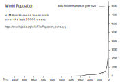

Pallas

Ich und meine sechs Freunde
Gruppenaufbau nach Persönlichkeitstyp
Wer sind meine Freunde?
Die Frage klingt einfach ... aber es ist kompliziert,
und die Psychologie-Experten haben bis heute keine Antwort.
Also: Wir müssen uns selber helfen.
und die Psychologie-Experten haben bis heute keine Antwort.
Also: Wir müssen uns selber helfen.
Thema:
Gerechtigkeit.
Menschen und Beziehungen.
Zielgruppe:
Menschen mit Zukunft.
Bauern und Soldaten.
Fachbegriffe:
Human Resource Management.
Matchmaking Algorithm.
Interpersonal Compatibility.
Team Composition.
Meine Thesen:
1. Jeder Mensch braucht sechs Freunde.
2. Diese Freunde erfüllen ein bestimmtes Muster, das Pallas-Muster.
3. Das Pallas-Muster gilt für alle Menschen.
4. Menschen sind unterschiedlich nach:
Geschlecht, Alter, Persönlichkeitstyp.
Geschlecht, Alter, Persönlichkeitstyp.
5. Persönlichkeitstyp gleich Inneres Geschlecht mal Inneres Alter.
Also ... Wer sind meine Freunde?
Nur wenige Weltbilder geben eine Antwort,
zum Beispiel
Astrologie
und Sozionik
machen
Vorhersagen
zur Kompatibilität zwischen Persönlichkeitstypen.
Aber das ist mir zu ungenau.
Ich suche ein mathematisch exaktes System,
mit dem ich freiwillige Beziehungen
erklären und vorhersagen kann.
TODO ich suche eine "ganzheitliche" theorie zur anwendung in arbeitsleben und privatleben.
eine schwäche von organisationspsychologie ist die beschränkung aufs arbeitsleben.
weil "einmischen in privatspähre ist unprofessionell" ...
Also, "Wer sind meine Freunde?",
oder mit anderen Worten:
Wie müssen wir verschiedene Menschen verbinden,
damit alle glücklich sind?
"Verschiedene Menschen" heisst vor allem:
Menschen mit verschiedenem Persönlichkeitstyp.
Synonyme:
Persönlichkeitstyp,
Subjektive Weltsicht,
Subjektive Wahrheit,
Innere Werte,
Geschmack,
Humor,
Talent,
Temperament,
Personality Type.
Pallas-Muster
Wer sind meine Freunde?
Meine Antwort ist das Pallas-Muster:

Das Pallas-Muster zeigt 16 Menschen von oben.
Jeder Kreis ist ein Mensch.
Abkürzungen:
MF = Mann Frau.
SL = Small Large = jung alt.
1234 = vier Persönlichkeitstypen.
(Die vier Typen erkläre ich später.)
Ich glaube:
Wenn ein Persönlichkeitstyp im richtigen Körper wohnt,
dann finde ich diesen Typ sympathisch.
... das ist meine Kern-These.
Also ein anderer Mensch ist zu mir genau dann kompatibel,
wenn sein Körper und Geist bestimmte Eigenschaften erfüllen.
(Geist = Persönlichkeitstyp = Innere Werte.)
Zusätzlich brauchen wir eine gemeinsame Sprache,
aber Kompatibilität ist die wichtigste Grundlage für jede gute Beziehung.
Umgekehrt gilt:
Wenn ein Persönlichkeitstyp im falschen Körper wohnt,
dann finde ich diesen Typ falsch, krank, dumm, störend, mühsam ...
Subjektive Wahrheit:
Welcher Körper ist "richtig"?
Welche Eigenschaften sind "richtig"?
Das ist immer relativ zu meinem Körper und Geist.
Woher kommt das Pallas-Muster?
Erfahrung und Symmetrie.
Ich habe meinen Persönlichkeitstyp rausgefunden
(Grundtyp 1, Subtyp 4).
Dann habe ich die Persönlichkeitstypen
meiner Familie, Freunde und Bekannten geschätzt,
immer mit der Frage "Wen mag ich? Wen mag ich nicht?"
oder "Wer passt zusammen? Wer hat immer Streit?"
Im Zweifel habe ich die "schönere" Lösung genommen
(Symmetrie, Streifen-Muster und Sechseck-Muster),
und irgendwann ist das Pallas-Muster rausgekommen.
Freunde sind nah, Feinde sind fern
Das Pallas-Muster zeigt Freunde und Feinde.
Wenn zwei Menschen direkt nebeneinander stehen, dann sind sie Freunde.
Wenn zwei Menschen weiter auseinander stehen, dann sind sie Feinde.
Feinde brauchen gemeinsame Freunde
für ein gesundes Zusammenleben (soziale Gesundheit, gesunde Gruppe).
Wenn zwei Feinde direkt zusammen leben,
dann gibt es immer wieder Missverständnisse,
und jeder findet automatisch alles
scheisse,
was der andere sagt und macht (Persönliche Gründe),
egal wie gut gemeint (Sachgründe).
Zarathustra: "Ich bin nicht der Mund für diese Ohren."
Die Glaubensfrage:
Falsch: "Was glaube ich?"
Richtig: "Wem glaube ich?"
Synonyme:
Echte Freunde,
Geistige Nähe,
Geist-Verwandte,
Soulmates,
Attraktion,
Anziehung,
Schönheit,
Sympathie,
Kompatibilität,
...
Was passiert am Rand vom Pallas-Muster?
Das Muster wird einfach wiederholt,
wie ein Stempel oder Kachel-Muster (Tessellation).
Zeile 5:
Zeile 5:
F1L M2L F4L M3L.
Spalte 5:
F1L F2S F3L F4S.
Jeder Mensch im Pallas-Muster hat 6 Freunde:
2 Freunde in horizontaler Richtung (gleiches Alter),
2 Freunde in vertikaler Richtung (gleiches Geschlecht),
2 Freunde in diagonaler Richtung (gleiche Diagonale, doppeltes Gegenteil).
Quadrate und Kreuze:
Im Pallas-Muster gibt es 2 verschiedene Vierer-Gruppen.
Jede Kreuz-Gruppe hat alle 4 Typen: 1-3-2-4.
Jede Quadrat-Gruppe hat nur 2 Typen: 1-2-1-2 oder 3-4-3-4.
Die Striche im Pallas-Muster verbinden immer die Gegentypen (1-2 und 3-4).
Namen für das Pallas-Muster:
Friend Map,
Landkarte der Freunde,
Muster für Beziehungen,
Mischkultur für Menschen,
Familienaufstellung,
Kompatibilitäts-Muster nach Persönlichkeitstyp,
Compatibility Chart for Personality Types,
...
Mathematische Beschreibung für das Pallas-Muster:
Irregular Tessellation of Square and Irregular 90-135 Hexagon.
Auf Deutsch:
Parkettierung von Quadrat und Unregelmäßiges 90-135 Sechseck.
Tessellation, Parkettierung, Kachelung heisst:
ein kleines Grundmuster wird wiederholt in alle Richtungen.
Unregelmäßiges Sechseck mit zwei 90 Grad Winkeln und vier 135 Grad Winkeln:
Ich nenne es Pallas-Sechseck,
weil dieses Sechseck entsteht am Rand vom Pallas-Symbol.
Genau dieses Sechseck ist auch im Logo
der Chemie-Firma "F. Hoffmann-La Roche AG",
als Anspielung auf Hexagons in der organischen Chemie.
Bessere Welt
Ich hoffe, das Pallas-Muster stimmt für alle Menschen.
Wenn es stimmt, dann ist das Pallas-Muster
eine Grundlage für eine bessere Welt:
Freunde sind
nah,
Feinde sind fern,
jeder darf seine Stärke leben,
jeder darf seine Schwächen delegieren an seine Freunde.
Pallas-Muster ohne Kreise

Pallas-Symbol
Warum heisst es "Pallas"?
Naja, das Symbol heisst Pallas.
Die Verbindung von Raute und Kreuz.
Für mich ein Symbol für F4:
Frau = Kreuz = durchgestrichener Penis, Typ 4 = Raute.
Vermutlich ist Pallas eine weibliche Form von Phallus, also Penis.
Eine Bedeutung vom Pallas-Symbol:
Speer (spear), Lanze (lance), Wurfspieß, Pike.
Also eine primitive Waffe.
Die Raute ist die Spitze,
das Kreuz ist der Griff.
Siehe Anhang: Griechische Mythologie
Alternative Darstellungen vom Pallas-Muster
Der Nachteil an diesen Darstellungen ist:
sie brauchen höhere Auflösung.
Dagegen: Das Pallas-Muster ist die einfachste Darstellung,
und ist auch bei niedriger Auflösung gut sichtbar,
zum Beispiel als 16x16 Pixel Icon am Monitor.
Das Pallas-Symbol ist ähnlich zum Venus-Symbol ♀.
Ich habe ganz bewusst nicht einen Kreis,
sondern ein Viereck genommen, damit man sieht:
Der Pallas-Schlüssel verbindet sieben Punkte.
Aber zurück zu:
Alternative Darstellungen vom Pallas-Muster.
Runde Linien
Pallas-Muster mit runden Linien:

Doppelbindungen und Einfachbindungen
Pallas-Muster mit Doppelbindungen und Einfachbindungen:

Hypothese
Das Pallas-Muster ist nur eine Hypothese,
also ein Lösungsvorschlag (Research Proposal).
Ich gebe dir keine Garantie dass es funktioniert.
Ist das Pallas-Muster richtig oder falsch?
Wie können wir das rausfinden?
Dazu müssen wir ein Experiment machen.
Ergebnisse darf jeder veröffentlichen auf meinen Websites (Github, Gitlab, ...).
(Ja, auch negative Ergebnisse.)
Alternativ-Hypothesen:
1. es gibt kein "Muster für Beziehungen" und alle Menschen sind kompatibel,
also zufällige Beziehungen sind genauso gut und belastbar
wie die "kompatiblen" Beziehungen im Muster.
2. dieses Muster ist falsch, aber es gibt ein anderes Muster
(Du darfst gerne ein anderes Muster vorschlagen,
dann können wir verschiedene Muster probieren und vergleichen.)
Ich kann leider keine Simulation machen,
oder das Problem "im Kopf lösen",
weil hier suche ich Grundlagen (Axiome, höchste Wahrheiten),
und dahinter gibt es keine rationalen Gründe,
sondern dahinter steht nur mein persönlicher Grund:
"Ich glaube dass meine Hypothese richtig ist".
Eine Hypothese ist richtig,
wenn sie viele Phänomene (Realitäten) erklären kann,
und keine Widersprüche erzeugt (Widerspruchsfreiheit).
Deswegen ist negatives Feedback (Widersprüche, "es funktioniert nicht")
genauso wichtig wie positives Feedback ("es funktioniert").
Eine Hypothese ist noch nicht richtig,
wenn sie nur "konsistent" ist,
also wenn sie nur "in sich schlüssig" ist.
So eine konsistente Hypothese sieht schön aus auf dem Papier,
aber muss immer noch getestet werden ("Feuerprobe").
Wahrheitsmatrix
Erster Eindruck ist billig,
und gibt nur eine grobe Einschätzung.
Glauben. Meinung. Screening. Ahnung. Verdacht. Indiz. Fühlen. Intuition.
Zweiter Eindruck ist teuer,
und gibt eine genaue Einschätzung.
Wissen. Beweis. Test. Experiment. Streng. Exakt.
Experiment
Das Experiment muss billig sein,
dann kann jeder Mensch das Experiment reproduzieren (wiederholen).
Es wird immer Menschen geben, die diese Theorie noch nicht kennen.
Diese Menschen brauchen einen billigen Weg zum Testen der Theorie.
An die Hypothese "glauben" müssen diese Menschen nur für das Experiment.
Das Experiment soll zeitlich klar begrenzt sein. Beispiel: einen Tag lang.
Wenn das Experiment vorbei ist, dann ist die Hypothese wieder ungültig.
Idealer weise sollte man immer skeptisch sein
bei allen Vorschlägen, Empfehlungen, Suggestionen ...
weil:
Streng genommen sind das alles nur Hypothesen
die jede Gruppe für sich prüfen muss
(Arbeitsteilung zwischen Fühlen und Wissen = Forschung und Produktion).
Beispiel für ein nicht-reproduzierbares Experiment:
Leben nach dem Tod.
Dieses Experiment (Sterben) kann jeder Mensch genau ein Mal machen,
also ist es nicht reproduzierbar.
Sprich: Ein Mal ist kein Mal.
Auch wichtig: Kontrollgruppen. "Falsch machen."
Beziehungsqualität schätzen kann man nur dann,
wenn man "richtige" und "falsche" Beziehungen probiert hat.
Also: Man muss beide probieren
und erst im Rückblick kann man sagen:
Das eine war besser, das andere war
schlechter.
Messungen sind immer relativ.
Probieren geht über Studieren.
Pallas-Experiment
Wie funktioniert dieses Experiment?
Dazu müssen wir Menschen so verbinden, wie im Pallas-Muster.
Diese Bindungen müssen freiwillig sein.
Ein Matchmaker (Kuppler, Vermittler) kann Vorschläge machen,
aber jeder Mensch darf "Nein" sagen,
oder selber Vorschläge machen (Reden oder Zeigen),
oder selber als Matchmaker arbeiten (Flache Hierarchie).
Zweier-Gruppen
Schritt eins
ist das Bilden von Zweier-Gruppen (Paare).
Beispiel:
Beispiel:
M1S-F3S
.
Schritt zwei
ist das Wechseln zwischen Zweier-Gruppen (Vierecke).
Beispiel:
Beispiel:
M1S-F3S-F2L-M4L
.
Zweier-Gruppen sind einfach.
Man hat etwas gemeinsam,
und man kann lästern über "die Anderen".
"Wir zwei gegen den Rest der Welt".
Problem:
Auf Dauer wird jedes Paar einseitig und sucht nach Ausgleich.
Lösung: Vierer-Gruppen.
Aber unser Ziel ist NICHT der Aufbau von blutverwandte Kleinfamilien
("wir machen zwei Kinder"),
sondern der Aufbau von geistverwandte Kleinfamilien
("wir suchen gemeinsame Freunde",
Adoption,
geistige Vermehrung, schlaue Lösung).

Vierer-Gruppen
Vierer-Gruppen sind etwas komplizierter.
Im Pallas-Muster stehen die vier Menschen
in einem Quadrat (Statik),
aber in der echten Welt gilt:
Die Vierer-Gruppen "zerfallen" immer in zwei Paare,
weil nur "unter vier Augen" kann man frei sein
(sich nicht beobachtet fühlen).
Die Paare wechseln immer,
weil auf Dauer wird jedes Paar einseitig und sucht nach Ausgleich
(Gruppendynamik, Partnertausch).
"Partnertausch" klingt nach Sex, aber das meine ich nicht.
Jede Vierer-Gruppe ist
eine geistverwandte Kleinfamilie:
Sohn Mutter Tochter Vater
= MS FL FS ML
= 2 Männer + 2 Frauen
= 2 Junge + 2 Alte.
Es gibt 3 Wege zum Paare bilden:
horizontal vertikal diagonal.

Beispiel:
Vierer-Gruppe
M1S-F3S-F2L-M4L
.
Horizontal-Paare:
M1S-F3S und M4L-F2L =
Sohn-Tochter und Vater-Mutter =
gleiches Alter.
Vertikal-Paare:
M1S-M4L und F3S-F2L =
Sohn-Vater und Tochter-Mutter =
gleiches Geschlecht.
Diagonal-Paare:
M1S-F2L und F3S-M4L =
Sohn-Mutter und Tochter-Vater =
gleiche Diagonale.
Partnertausch
Wie genau funktioniert der Partnertausch?
Das weiss ich noch nicht,
und das werden wir im Experiment sehen.
Ich glaube:
Vierer-Gruppen
"schwingen"
immer zwischen
Horizontal-Paare und Vertikal-Paare.
TODO
exodus. brain drain.
alle guten laufen weg.
übrig bleibt nur der abschaum.
die karavane zieht weiter.
wertvolle menschen rekrutieren:
schöne, schlaue, starke, high value male, high value female.
arche noah.
TODO
schönheit ist subjektiv.
kompatibilität = schönheit = attraktion.

Hier zeige ich Menschen als Puzzel-Teile.
Nase nach Innen
= introvertierter Subtyp
.
Nase nach Aussen
= extravertierter Subtyp
.
Die Bindungen sind "Monolog-Bindungen":
Ein Bindungs-Partner spielt "Seher und Redner" (unsichtbar und taub),
der andere Bindungs-Partner spielt "Hörer und Zeiger" (stumm und blind).
Subtyp und Partner
Ich glaube:
Es gibt eine Verbindung zwischen Subtyp und Bindungs-Partner.
Diese Verbindung geht in beide Richtungen (bidirektional):
Ein bestimmter Subtyp wirkt als Mating Call
für einen bestimmten Bindungs-Partner.
Und andersrum:
Ein bestimmter Bindungs-Partner (Mate Presence)
aktiviert einen bestimmten Subtyp.
Ich glaube:
Nur wenige Menschen haben ein Gleichgewicht
zwischen ihren 2 Subtypen.
Die meisten Menschen sind "spezialisiert" auf einen Subtyp
(Stärke, mehr Erfahrung),
und der andere Subtyp ist
schwächer.
Ob und wie die Diagonal-Paare funktionieren,
weiss ich noch nicht. Diagonal-Paare: MS-FL und FS-ML.
Subtyp und gleicher Grundtyp
Subtyp bei gleichen Typen.
Beispiel:
Zwei F3 leben zusammen.
Die zwei Typen sind nicht kompatibel,
also werden sie sich gegenseitig abstoßen über ihre Subtypen:
F301 und F302.
TODO grafik mit subtypen.
Wenn diese zwei Menschen verschieden alt sind,
dann können sie eine "schwache Bindung" haben.
Beipiel:
F3L und F3S → F302L und F301S.
Die Subtypen liegen rechtwinklig.
Bindung an Subtyp:
F301S bindet an den Subtyp F2L von F302L.
Wenn beide schon den gleichen Subtyp haben,
bevor sie zusammen kommen,
dann sind sie noch weniger kompatibel, weil zu ähnlich
(Konkurrenzkampf oder Stillstand).
Achter-Gruppen
Schritt drei ist das Wechseln zwischen Vierer-Gruppen.
Das Pallas-Muster zeigt 2 verschiedene Vierer-Gruppen:
Kreuze und Quadrate.
Kreuze verbinden alle 4 Typen.
Quadrate verbinden nur 2 Typen (Beispiel: 1-2-1-2).
Pallas-Schlüssel
Die Verbindung aus Kreuz und Quadrat heisst Pallas, oder Pallas-Schlüssel.
Es ist eine Verbindung von Gegensätzen (conjunctio oppositorum),
so wie "Tag und Nacht".
Der Pallas-Schlüssel verbindet 7 Punkte
(Glückszahl 7).
Deswegen: Ich und meine sechs Freunde

Kreuz-Gruppen und Quadrat-Gruppen
Was ist der Unterschied zwischen Kreuz-Gruppen und Quadrat-Gruppen?
Das weiss ich noch nicht,
und das werden wir im Experiment sehen.
Ich glaube:
Kreuze sind besser am Tag
(Tagesordnung, Arbeit, Arbeitskollegen,
Teamwork, angezogen, Aktivität).
Quadrate sind besser in der Nacht
(Nachtordnung, Familie, Sex, privat, nackt, Ruhe).
Warum?
Ich selber bin M1
und meine 2 Frauen sind F2 und F3 (gleiches Alter).
Für mich gilt:
F2 ist besser zum Ficken und Schlafen (Nacht),
F3 ist besser zum Reden und Arbeiten (Tag).
Diesen Wechsel zwischen Tagesordnung und Nachtordnung
kennen wir schon vom Wechsel
zwischen Schlafplatz (Familie) und Arbeitsplatz (Freunde).
Auch Tiere machen jeden Tag zwei "Wildwechsel"
zwischen Schlafplatz und Fressplatz.
Quadrat-Gruppen
Was ist der Unterschied zwischen den zwei Quadrat-Gruppen?

Was haben die Typen 12 gemeinsam?
Beide sind "orthogonal", rechtwinklig.
Typ 1 ist "oben breit, unten lang",
Typ 2 ist "oben lang, unten breit".
Also die "Verbindung von Gegensätzen" in einem Körper.
Ich glaube:
Dadurch haben Typen 12 ein komplexes Weltbild
(zweidimensional, Logik, Egoisten, Individualisten, Narzissten, Low Agreeableness, Streitlust, Einzelkämpfer).
Typen 34 erreichen diese Komplexität nur durch Paarung (Paar aus Typ 3 und Typ 4),
aber "innerer Dialog" von Typen 12
ist immer effizienter als
"äusserer Dialog" zwischen Typ 3 und Typ 4.
Was haben die Typen 34 gemeinsam?
Beide sind "parallel".
Typ 3 ist "oben breit, unten breit",
Typ 4 ist "oben lang, unten lang".
Ich glaube:
Dadurch haben Typen 34 ein einfaches Weltbild
(eindimensional, Grafik, Altruisten, Kollektivisten, High Agreeableness, Harmoniesucht, Teamsport).
Typen 34 erreichen ein komplexes Weltbild nur durch Paarung (Paar aus Typ 3 und Typ 4),
oder in den Kreuz-Gruppen (bei Verbindung zu Typen 12),
also "äusserer Dialog" mit anderen Typen.
Gleich oder verschieden?
"Gleich und Gleich gesellt sich gern"
oder
"Gegensätze ziehen sich an"?
Beides.
Helen Fisher hat Forschung gemacht für stabile Paar-Beziehungen.
Ergebnis:
Typen 12 heiraten den Gegen-Typ.
Typen 34 heiraten den gleichen Typ.
Also haben wir 4 stabile Paare:
M1-F2, M2-F1, M3-F3, M4-F4.
Das Pallas-Muster sagt:
Typen 12 heiraten gleiches Alter.
Typen 34 heiraten verschiedenes Alter.
Gute Gewalt?
Andere Menschen zwingen zu deren Glück?
TODO ...
Kurzfristige Gewalt ist okay,
langfristige Gewalt ist ein Zeichen dass man Irgendwas falsch macht.
Die kurzfristige Gewalt
dient dem Überwinden von einem Anfangswiderstand.
TODO grafik: energie-niveau,
anfangs endotherme reaktion bis zum "tipping point",
später exotherme reaktion
Vier Typen
Grundlage für das Pallas-Muster ist Persönlichkeits-Psychologie.
Also: Menschen in Schubladen stecken.
Dieser Teil von Psychologie ist uralt, locker 2000 Jahre alt,
und schon sehr gut erforscht.
Quasi-Konsens: Es gibt
vier Persönlichkeitstypen.
Für diese Vier Typen werden immer wieder neue Namen erfunden,
also jeder Autor hat seinen Namespace (Namensraum).
Jeder Namespace hat seine eigenen Beschreibungen der vier Typen.
Für die Übersetzung zwischen 2 Namespaces
lese ich die Beschreibungen und frage:
Welche Beschreibungen sind ähnlich?
So kriege ich meine Übersetzungs-Tabelle.
Namespaces
Vier Typen in verschiedenen
Namespaces.
Längere Beschreibungen stehen auf den nächsten Seiten.
| Typ Nummer | 1 | 2 | 3 | 4 |
|---|---|---|---|---|
| Element |
Feuer
|
Erde | Luft | Wasser |
| Smilie | ): ) |
(: ( |
(: ) |
): ( |
| Rolle | Vordenker | Nachmacher | Vormacher | Nachdenker |
| David Keirsey | Handwerker | Händler |
Redner
|
Denker |
|
Interesse
|
Gerechtigkeit |
Gewohnheit
|
Philosophie | Technik |
| Robert Moore |
Kämpfer
|
Liebhaber | Magier | König |
| Rolle |
Aktivist
|
Pazifist
|
Optimist | Pessimist |
| Carol Tuttle |
Willensstark
|
Sensibel | Lustig | Ernst |
| Finger | Mittel | Klein | Ring | Zeige |
| Körperteil | Linkes Hirn | Rechte Hand | Linke Hand | Rechtes Hirn |
| Körperform | Herz ♡ | Birne ♤ | Breit ♧ | Lang ♢ |
| Kleid oben | Schwarz-Gelb | Weiss-Blau | Schwarz-Rot | Weiss-Grün |
| Kleid unten | Weiss-Blau | Schwarz-Gelb | Schwarz-Grün | Weiss-Rot |
| Zylinder-Geometrie | Oben | Unten | Aussen | Innen |
|
Jahreszeit
|
Herbst | Frühling | Sommer | Winter |
| Carl Jung | Ntuition | Sensation | Feeling | Thinking |
| MBTI | INTP | ESFJ | ENFP | ISTJ |
| Attachment Style | Balanced | Disorganized | Coercive | Avoidant |
|
↑ Aufregen
|
früh | spät | früh | spät |
| ↓ Beruhigen | früh | spät | spät | früh |
| Parenting Style | Authorative | Neglectful | Permissive | Autoritarian |
| Erziehungs-Stil |
aktiv
|
passiv | helfen | fordern |
| William Sheldon | mesomorph | mesomorph | endomorph | ectomorph |
| Gewichtsklasse | Mittelgewicht | Mittelgewicht |
Schwergewicht
|
Leichtgewicht |
| Diät | Zone | Zone | LCHF, Keto | HCLF |
| Ayurveda Doshas | Pitta | [Prithvi] | Kapha | Vata |
| Flow Profile | Hard Charger | Flow Goer | Crowd Pleaser | Deep Thinker |
| Health Type |
Crusader
|
Guardian | Connector | Sensor |
| Business Chemistry | Driver | Guardian | Pioneer | Integrator |
| Hire Success | Director | Supporter | Socializer | Thinker |
| Richard Bartle | Killer | Explorer | Socializer | Achiever |
| Anton LaVey |
Satan
|
Belial
|
Lucifer |
Leviathan
|
| Simpsons | Marge | Homer | Bart | Lisa |
| South Park | Kenny | Stan | Cartman | Kyle |
|
American Dad
|
Steve | Stan | Francine | Hayley |
| Harry Potter | Gryffindor | Hufflepuff | Ravenclaw | Slytherin |
Mehr Namespaces in meinen
alchi-tables.
Wer ist wer
Wer hat welchen Persönlichkeitstyp?
Das ist eine Schwachstelle meiner Theorie.
Meine Theorie funktioniert nur dann,
wenn wir die Typen richtig schätzen.
Also zumindest am Anfang
würde ich solche Menschen bevorzugen,
wo ich den Typ leicht schätzen kann.
Also:
Wer ist
wer?
Das sehe ich an Körperform und Verhalten.
Einfach zu sehen sind "dicke" Menschen (Typ 3)
und
"dünne"
Menschen (Typ 4).
Typ 3 Menschen können schnell Gewicht zunehmen
(Aufbau von Fett und Muskeln),
vor allem wenn sie viele Kohlenhydrate essen,
und können dieses Gewicht nur langsam wieder abnehmen
(LCHF-Diät, Keto-Diät).
Typ 3 Menschen überleben hartes Klima, Landklima, lange kalte Winter,
überleben mehrere Wochen ohne Essen (lange Fastenzeit).
Typ 4 Menschen können nur langsam Gewicht zunehmen
(Hard Gainer) (können viele Kohlenhydrate essen aber werden nicht dick)
und verlieren dieses Gewicht schnell wieder.
Typ 4 Menschen brauchen mildes Klima, Seeklima, kurze warme Winter,
müssen jeden Tag essen (kurze Fastenzeit).

Typ 1 und Typ 2 haben ähnliche Körper,
beide sind "von Natur aus sportlich",
haben mittleres Gewicht,
können Gewicht zunehmen und abnehmen (mit etwas Mühe),
bevorzugen Übergangsklima (zwischen Seeklima und Landklima).
Typ 1 und Typ 2 unterscheiden sich stärker beim Verhalten
(Streitlust, Dualismus).
Typ 1 ist eher herrisch, dominant, grandios (grandiose narciss),
überheblich, "männlich", stolz, frech, arrogant, aggressiv,
starke Meinungen (strong opinions),
Selbstwert, Licht,
neugierig, Risiko, Freiheit.
Typ 2 ist eher unterwürfig, subordiniert,
verletzbar (vulnerable narciss), höflich, ängstlich,
defensiv, angepasst, passiv,
schwache Meinungen (weak opinions),
Selbstzweifel, Fremdwert, Schatten,
Geduld, Sicherheit.
Körperform
Auch über die Körperform kann man Typen schätzen
(Physiognomie, Morpho-Psychologie, Profiling,
erster Eindruck, first impression):
Gesichtsform (breites Gesicht = 3, langes Gesicht = 4),
Handform (breite Gelenke = 3, lange Finger = 4),
Fingernägel (lange Nagelbetten = Typen 14, kurze Nagelbetten = Typen 23),
Nasenspitze (Doppelspitze oder eckige Spitze = Typen 34, runde Spitze = Typen 12),
...
aber hier gibt es immer wieder Widersprüche,
und ich sammle möglichst viele Informationen
für ein "ganzheitliches" Bild.
Stress-Reaktion
Verhalten zeigt Typ durch typische Stress-Reaktion.
|
→ |
|
Dieser Test funktioniert schon für Kleinkinder.
Man braucht einen Stress, der zeitlich klar definiert ist.
Also der Stress braucht genauen Anfang und Ende.
The Strange Situation
Mutter verlässt Kind (Anfang vom Stress),
Mutter kommt zurück (Ende vom Stress).
Wie geht der Test?
Man beobachtet das Kind am Anfang und Ende vom Stress.
Beim Anfang vom Stress fragt man:
Wann tut das Kind anfangen zu Schreien? Früh oder spät?
Die "früh aufregen" Kinder (Typen 13) schreien früher,
die "spät aufregen" Kinder (Typen 24) verdrängen den Stress (Geduld)
und schreien später (die Reaktion wird gehemmt, unterdrückt,
aufgeschoben, gespart, verzögert, prokrastiniert).
Beim Ende vom Stress fragt man:
Wann tut das Kind aufhören zu Schreien? Früh oder spät?
Die "früh beruhigen" Kinder (Typen 14) beruhigen sich früher,
die "spät beruhigen" Kinder (Typen 23) halten die Reaktion
(Trägheit, weiter Schreien, weiter Kämpfen)
und beruhigen sich später.
TODO
Typen 14 können sich alleine schneller beruhigen? (frei)
Typen 23 brauchen beim Beruhigen Hilfe von Anderen? (abhängig)
TODO grafik: square wave stress + stress response curves.
"square wave" weil stress muss zeitlich klar definiert sein = anfang + ende vom stress.
4 stress response curves = 4 body shapes!
wie fische: wir schwimmen kopf-voraus:
erst oberkörper ("inneres alter"), dann unterkörper ("inneres geschlecht").
wie tiere: torso liegt horizontal beim laufen auf 4 beinen.
Diese typische Stress-Reaktion sieht man auch bei Erwachsenen,
aber das kindische Schreien wird ersetzt durch andere Stress-Reaktionen,
und der Subtyp verschiebt das Verhalten
(aber nie ins Gegenteil, zum Beispiel
ein Typ 3 Mensch wird nie so reagieren wie ein Typ 4 Mensch).
Test-Fragen:
Wird die Stress-Reaktion ausgelebt ("früh Aufregen") oder verdrängt ("spät Aufregen")?
Ist die Stress-Reaktion kurz ("früh Beruhigen") oder lang ("spät Beruhigen")?
Elemente
Element heisst:
Ich bin ein X und mein Element ist Y.
Diese Namen nutzten Psychologen vor 2000 Jahren in Griechenland (Antike, Klassik).
|
und |
|
... die Übersetzungen für Typen 234 sind einfach,
aber warum "1 = Feuer = Tier"?
Weil "Tier" ist das Gegenteil von "Pflanze".
Zahlen
Zahlen:
Für mich sind die Zahlen wichtig,
weil ich damit die Typen extrem kompakt beschreiben kann,
also mit nur einem Symbol (wichtig für das Pallas-Muster).
Die Zahlen 1234 kann ich auch mit meinen 4 Fingern zeigen
(Römische Zahlen: I II III IIII).
Warum diese Zahlen?
einfaches Weltbild:
Radius 1 = Erdkern = Magma, Vulkane, Feuer.
Radius 2 = Erdhülle = Erde, Steine.
Radius 3 = Luft = farblos, durchsichtig, gelbe Sonne.
Radius 4 = Wasser = blauer Himmel.
(Die Sonne ist gelb, weil der Himmel ist blau = Kontrast.)
(Der Himmel ist blau,
weil blaue Photonen haben kürzere Wellen,
treffen häufiger auf Luft-Moleküle,
werden breiter gestreut als rote/gelbe/grüne Photonen.)
| 1. Eins | 3. Drei | |
| 0. Null | ||
| 4. Vier | 2. Zwei |
TODO move.
Alter ist relativ und geht nach Gefühl.
Sprich:
Man ist so alt wie man sich fühlt.
Also:
Ich kann mein Alter immer nur relativ angeben zu einem Anderen.
Ich darf nicht fragen "Wie alt bist du?"
sondern ich muss schätzen:
Ist der jünger/gleichalt/älter als ich?
Farben
Farben:
Figur-betonende Kleidfarben.
Natürlicher Dresscode.
|
/ |
|
Warum Schwarz-Weiss?
Zu einer breiten Körperhälfte passen schwarze und enge Kleider (Schwarz macht schlank, Tight Fit),
zu einer langen Körperhälfte passen weisse und weite Kleider (Weiss macht dick, Baggy Style).
Warum?
Kontrast zwischen Körper und Kleid.
Kontrast zwischen Natur und Kunst.
Man kann auch "falsche" Farben tragen,
aber das wirkt "geschmacklos" (bad taste)
für sensible Augen.
|
/ |
|
Warum diese Farben?
Kleider sind etwas Künstliches,
also ein Kontrast zum Körper (Natur).
Für Typen 12 gilt:
Rot-Grün sind natürliche Farben
(Eigenfarben: Rot = Typ 1, Grün = Typ 2),
Gelb-Blau sind künstliche Farben.
Deswegen tragen Typen 12 lieber gelbe oder blaue Kleider,
oder wählen lieber gelbe oder blaue Parteien.
Für Typen 34 gilt das Gegenteil:
Gelb-Blau sind natürliche Farben
(Eigenfarben: Gelb = Typ 3, Blau = Typ 4),
Rot-Grün sind künstliche Farben.
Deswegen tragen Typen 34 lieber rote oder grüne Kleider,
oder wählen lieber rote oder grüne Parteien.
Eigenfarben:
Die Eigenfarbe wird am wenigsten nach Aussen getragen.
| 1. Rot | 3. Gelb | |
| Eigenfarbe | ||
| 4. Blau | 2. Grün |
Warum diese "Eigenfarben"?
2 = Pflanze = Grün.
4 = Wasser = Blau.
1 ist das Gegenteil von 2,
Rot ist die Gegenfarbe von Grün
(Gegenfarben vermischen sich zu Schwarz oder Weiss).
3 ist das Gegenteil von 4,
Gelb ist die Gegenfarbe von Blau.
Farben: Oben oder unten?
Warum ist Farbe X oben?
Warum ist Farbe Y unten?
Die obere Kleidfarbe ist die Eigenfarbe vom Typ mit gleichem Oberkörper.
Die untere Kleidfarbe ist die Eigenfarbe vom Typ mit gleichem Unterkörper.
Beispiel:
Typen 13 haben breiten Oberkörper.
Typen 14 haben langen Unterkörper.
Also:
Typ 1 hat als obere Kleidfarbe die Eigenfarbe von Typ 3 (gelb),
Typ 1 hat als untere Kleidfarbe die Eigenfarbe von Typ 4 (blau).
| 1. Schwarz-Gelb | 3. Schwarz-Rot | |
| Kleid oben | ||
| 4. Weiss-Grün | 2. Weiss-Blau |
| 1. Weiss-Blau | 3. Schwarz-Grün | |
| Kleid unten | ||
| 4. Weiss-Rot | 2. Schwarz-Gelb |
Körperformen
Ich sehe vier Körperformen:
1234 = Herz Birne Breit Lang.
Grundlagen:
William Sheldon:
1234 = meso meso endo ecto-morph.
Elliot Abravanel:
1234 = Thyroid Gonad Adrenal Pituitary.
Zu oberflächlich?
Manche Menschen sind überrascht wenn ich behaupte:
Ich kann Innere Werte (Persönlichkeitstyp) ablesen von der Körperform.
"Nur weil ich dick bin muss ich doch nicht Typ 3 sein!"
Hmm. Warum nicht? Warum kompliziert, wenns auch leicht geht?
Für meinen Ersten Eindruck muss ich nach Körperform gehen,
weil die Körperform sehe ich sofort.
Aber nur bei manchen Menschen sehe ich den Typ auf den ersten Blick ...
andere Menschen muss ich länger beobachten (Reden, Verhalten, Stress-Reaktion).
Ich habe auch eine etwas andere Definition zwischen Körper und Geist
= Grobstruktur und Feinstruktur
= Äussere Werte (Geschlecht und Alter)
und Innere Werte (Persönlichkeitstyp, inneres Geschlecht und inneres Alter).
Also die "inneren" Werte sind nicht komplett versteckt,
sondern nur schwächer sichtbar als die "äusseren" Werte.
Das Schließen von Körperform auf Innere Werte
ist bekannt als Physiognomie oder Morpho-Psychologie.
Wer zu viel Zeit hat,
der kann sich ja ein paar Studien dazu durchlesen ...
| 1. Herz | 3. Breit | |
| Körperform | ||
| 4. Lang | 2. Birne |
| 1. Oben | 3. Aussen | |
| Zylinder | ||
| 4. Innen | 2. Unten |
Typ 1:
Herz-Form,
starke Arme,
schwache Beine,
Boxer,
TODO
Typ 2:
Birnen-Form,
starke Beine,
schwache Arme,
Ringer (griechisches Ringen),
TODO
Typ 3:
kurze Knochen,
breite Gelenke,
symmetrisches Gesicht,
symmetrische Fettverteilung,
Kugelstoßer,
Sprinter,
Kickboxer,
MMA,
Easy Gainer + Hard Loser,
Neigung zu Übergewicht,
langsamer Stoffwechsel (low metabolic rate),
Typ 4:
lange Knochen,
schmale Gelenke,
kleiner Körper,
großer Kopf,
symmetrisches Gesicht,
symmetrische Fettverteilung,
Marathon-Läufer,
Hard Gainer + Easy Loser,
Neigung zu Untergewicht,
schneller Stoffwechsel (high metabolic rate),
Typen 12:
gerade Finger.
Typen 34:
spitze Finger.
Essen
Diät
wird oft falsch verstanden als "weniger essen",
aber hier meine ich "anders essen".
Jeder Typ braucht sein
Verhältnis der Makro-Nährstoffe:
Kohlenhydrate Fett Protein = CFP.
Hier die Masse-Verhältnisse in Gramm oder Unzen,
relativ zu 100:
| 3. | CFP = |
|
Gramm | |||
| 12. | CFP = |
|
Gramm | |||
| 4. | CFP = |
|
Gramm |
Hier die Energie-Verhältnisse in Calorien oder Joule,
relativ zu 100:
| 3. | CFP = |
|
Calorien | |||
| 12. | CFP = |
|
Calorien | |||
| 4. | CFP = |
|
Calorien |
Beispiel:
Typ 3 soll essen:
30 Gramm Kohlenhydrate + 25 Gramm Fett + 45 Gramm Protein.
Das ist die "Low-Carb High-Fat" (LCHF) Diät.
30 Gramm Kohlenhydrate + 25 Gramm Fett + 45 Gramm Protein.
Das ist die "Low-Carb High-Fat" (LCHF) Diät.
"Low Fat" Produkte sind für Typ 4.
Typ 4 Menschen können weniger Fett verdauen als andere Typen.
Im Fitness-Bereich werden die Makro-Nährstoffe meistens angegeben
als Energie-Verhältnisse in Calorien oder Joule.
Typ 3: CFP = 25:40:35 Cal.
Typen 12: CFP = 40:30:30 Cal.
Typ 4: CFP = 55:20:25 Cal.
Beispiel:
Typ 3:
25% vom Energiebedarf sind Kohlenhydrate,
40% vom Energiebedarf sind Fett,
35% vom Energiebedarf sind Protein.
Beispiel Energiebedarf:
2.000 KiloCalorien pro Tag für:
60kg Körpergewicht,
Alter 20-30 Jahre,
ohne körperliche Aktivität (PAL-Faktor 1,2).
Zum Umrechnen zwichen Masse und Energie
braucht man die Energie-Dichten:
9 Calorien pro Gramm für Fett.
4 Calorien pro Gramm für Kohlenhydrate und Protein.
Smilies
Typen 13 sind optimistisch, also Mundwinkel hoch.
Typen 24 sind pessimistisch, also Mundwinkel runter.
Typen 14 sind "tough-minded", also böser Blick.
Typen 23 sind "tender-minded", also braver Blick.
| 1. ): ) |
3. (: ) |
|
| Smilie | ||
| 4. ): ( |
2. (: ( |
Subtypen mit Smilies:
Durch Subtypen wird immer eine Eigenschaft verstärkt,
und die andere Eigenschaft neutralisiert.
Beispiel Typ 104 = Grundtyp 1, Subtyp 4.
Typen 14 sind beide männlich, tough-minded,
also Typ 104 ist "extrem männlich",
also sind die Augen "doppelt böse".
Typ 1 ist jung, Typ 4 ist alt,
also Typ 104 ist "mittel alt",
also sind die Mundwinkel gerade.
Also:
Typ 104 =
)): |.
Der Nachteil an dieser Darstellung:
Man kann nicht unterscheiden zwischen Grundtyp und Subyp,
also Typ 104 hat das gleiche Smilie wie Typ 401.
Also gibt es hier insgesamt 8 Typen,
aber wenn wir Grundtyp und Subtyp unterscheiden,
dann gibt es insgesamt 12 Typen (12 Sternzeichen).
Hauptberufe
Diese Vier Typen habe ich mir ausgedacht.
Grundlage:
Auch unser Gehirn hat Geschlecht und Alter.
Grundlage:
Körperformen:
1234 = Herz Birne Breit Lang.
Ich sage:
Typen 14 = Langer Unterkörper = männlich.
Typen 23 = Breiter Unterkörper = weiblich.
Auch beim Verhalten:
Typen 14 (tough-minded, psychotic, schlau, Freigeist) sind eher männlich,
Typen 23 (tender-minded, neurotic, stark, gesellig) sind eher weiblich.
Oberkörper:
Typen 13 nutzen häufiger ihr "junges" Hirn (Cortex, Breitensuche),
Typen 24 nutzen häufiger ihr "altes" Hirn (Stamm, Tiefensuche).
Deswegen:
Typen 13 sind "jung",
Typen 24 sind "alt".
Also:
Typen 13 = jung = breite Oberkörper,
Typen 24 = alt = lange Oberkörper.
| 1. Sohn | 3. Tochter | |
| Hauptberuf | ||
| 4. Vater | 2. Mutter |
Inneres Geschlecht und Inneres Alter
| 1. jung + männlich | 3. jung + weiblich | |
| Innere Eigenschaften | ||
| 4. alt + männlich | 2. alt + weiblich |
Andere Alchemisten sagen:
Typen 13 sind männlich,
Typen 24 sind weiblich.
Kein Typ
Was mache ich mit Menschen,
wo ich den Persönlichkeitstyp nicht schätzen kann?
Dann gehe ich den "Rückweg"
von Beziehungen zum Typ:
"Zeig mir deine Freunde,
und ich sag dir wer du bist."
Also ich nehme andere Menschen
wo ich mir sicher bin beim Persönlichkeitstyp
("Bilderbuch-Typen"),
und dann tu ich ausprobieren:
Welche Beziehungen sind kompatibel?
Subtypen
Neben den Vier Typen kennen Psychologen auch Subtypen.
Ich glaube:
Jeder Typ hat 2 Subtypen.
Für diese Subtypen gibt es auch wieder verschiedene Namen.
Carl Jung: extravertiert ambivertiert introvertiert.
Astrologie: cardinal mutable fixed.
Der dritte Subtyp (ambivertiert, mutable) heisst:
die 2 Subtypen sind gleich stark.
Die Subtypen beschreibe ich wieder mit den vier Typen 1234,
aber zwischen Grundtyp und Subtyp kommt eine Null.
Beispiel: 104 = Grundtyp 1, Subtyp 4.
Übersetzung:
extravertierter Subtyp
= cardinal modality
= Subtyp ist jung (Typen 13)
= fühlt sich jung, stark, aktiv, wach, Frühaufsteher, stolz, hoher Selbstwert,
sichtbar, zeigt sich gerne, mutig, Risiko-freudig,
attention-seeking, steht gerne im Mittelpunkt, ...
introvertierter Subtyp
= fixed modality
= Subtyp ist alt (Typen 24)
= fühlt sich alt, schwach, passiv, müde, Langschläfer, Scham, Selbstzweifel,
schüchtern, versteckt, defensiv, meidet Risiko,
meidet den Fokus, meidet den Mittelpunkt, ...
Grundtyp oder Subtyp
Differenzial-Diagnose:
Wenn zwei Typen zu einem Mensch passen:
Welcher Typ ist der Grundtyp?
Welcher Typ ist der Subtyp?
Dafür nutze ich die Körperform.
Beispiel:
Ein Mensch ist eine Mischung aus Typ 1 und Typ 4.
Dieser Mensch hat die Körperform "ectomorph"
(lange Knochen, schmale Gelenke, ...),
also ist dieser Mensch:
Grundtyp 4, Subtyp 1 =
Typ 401
.
TODO ausschluss von gegenteil: welcher typ passt am wenigsten?
Relative Definition von Subtypen
Eine "globale" oder "absolute" Definition von Subtypen ist schwierig,
wie bei Carl Jung oder Astrologie.
Einfacher ist:
Zwei "lokale" oder "relative" Definition von Subtypen:
Typen 12: Subtypen sind Typen 34.
Typen 34: Subtypen sind Typen 12.
TODO natur und kunst.
typen 12 sagen: 12 ist natur, 34 ist kunst.
typen 34 sagen: 34 ist natur, 12 ist kunst.
Absolute Definition von Subtypen
Sternzeichen:
12 = 4 x 3.
Die zwölf Sternzeichen ergeben sich
durch Multiplikation der vier Grundtypen
mit drei "Modalitäten", also Subtypen.
Namen für Subtypen:
Astrologie: cardinal mutable fixed.
Carl Jung: extravertiert ambivertiert introvertiert.
|
Alchi
|
103 | 1 | 104 |
|---|---|---|---|
| Carl Jung | Ne = extravertierte Ntuition | N = Ntuition | Ni = introvertierte Ntuition |
| MBTI |
INFP
|
INTP ENTJ, ISFP |
INTJ |
| Sternzeichen | Widder, Aries | Schütze, Sagittarius | Löwe, Leo |
| Modalität | cardinal Fire | mutable Fire | fixed Fire |
| Feiertag | 20.8. (August) | 20.9. (September) | 20.10. (Oktober) |
| Alchi | 203 | 2 | 204 |
|---|---|---|---|
| Carl Jung | Se = extravertierte Sensation | S = Sensation | Si = introvertierte Sensation |
| MBTI | ESFP | ESFJ ENTJ, ISFP |
ESTJ |
| Sternzeichen | Steinbock, Capricorn | Jungfrau, Virgo | Stier, Taurus |
| Modalität | cardinal Earth | mutable Earth | fixed Earth |
| Feiertag | 20.4. (April) | 20.3. (März) | 20.2. (Februar) |
| Alchi | 301 | 3 | 302 |
|---|---|---|---|
| Carl Jung | Fe = extravertiertes Fühlen | F = Fühlen | Fi = introvertiertes Fühlen |
| MBTI | ENTP | ENFP INFJ, ESTP |
ENFJ |
| Sternzeichen | Waage, Libra | Zwillinge, Gemini | Wassermann, Aquarius |
| Modalität | cardinal Air | mutable Air | fixed Air |
| Feiertag | 20.7. (Juli) | 20.6. (Juni) | 20.5. (Mai) |
| Alchi | 401 | 4 | 402 |
|---|---|---|---|
| Carl Jung | Te = extravertiertes Denken | T = Denken | Ti = introvertiertes Denken |
| MBTI | ISTP | ISTJ INFJ, ESTP |
ISFJ |
| Sternzeichen | Krebs, Cancer | Fische, Pisces | Skorpion, Scorpius |
| Modalität | cardinal Water | mutable Water | fixed Water |
| Feiertag | 20.11. (November) | 20.12. (Dezember) | 20.1. (Januar) |
Beispiel:
Mein Typ ist M104 = Mann, Grundtyp 1, Subtyp 4
= introvertierte Ntuition bei Carl Jung.
Den Subtyp 4 sieht man auch an meinem Körper:
ich bin sportlich, aber eher untergewichtig.
Subtyp und Partner
Subtyp entscheidet:
Welche 2 von meinen 4 Freunden sind wichtiger?
Also: Welche Freunde haben Priorität?
Also: Welche Beziehungen sind stabiler?
Hier gibt es eine "globale" Definition von Subtypen:
Ein Subtyp bindet an gleiches Alter und verschiedenes Geschlecht = "heterosexuell".
Ein Subtyp bindet an verschiedenes Alter und gleiches Geschlecht = "homosexuell".
Gleiches Geschlecht
Wie genau soll man "Homosexualität" ausleben?
Gute Frage ...
einfache Antwort: "ohne Sex".
Latinisch "sexus" heisst ja einfach nur "Geschlecht", also Mann oder Frau.
Ich selber (als M104) bin "heterosexuell"
(im Sinn von: ein Mann der Sex nur mit Frauen will).
Ich glaube: Sex passt nur in heterosexuelle Beziehungen.
Wenn ein Mensch "homosexuell" ist,
also wenn sein Subtyp stabilere Bindungen zum gleichen Geschlecht hat,
dann hat dieser Mensch auch "heterosexuelle" Bindungen (zum anderen Geschlecht),
aber diese Bindungen sind eher labil (weniger stabil, seltener).
Subtypen im Pallas-Muster
Die Subtypen sieht man auch im Pallas-Muster.
Regel: "einen Schritt weiter".
Jeder Mensch hat 4 Freunde (in geraden Richtungen, nicht diagonal).
Wir gehen "einen Schritt weiter" und landen beim Subtyp.
Was heisst das?
Wenn ich zu einem meiner 4 Freunde passen will,
dann muss ich den Subtyp "spielen" der hinter diesem Freund liegt.
Beispiel:
Ich bin M1, meine Frau ist F3.
Damit wir zusammen passen, muss ich M104 spielen,
und sie muss F302 spielen.

Wenn im Pallas-Muster zwei Menschen nebeneinander stehen
(Beispiel: M1 und F3 mit gleichem Alter),
und wenn die Subtypen parallel liegen
(Beispiel: M104 und F302 = Pfeile in der Grafik),
dann passen diese zwei Menschen gut zusammen (starke Dialog-Bindung).
Die zwei Menschen "umarmen" einander mit ihren Subtypen,
ähnlich wie im Yin-Yang Symbol
(Yin-Yang = Frau-Mann = passiv-aktiv = Schwarz-Weiss = Schatten-Licht).
Kodierung von Subtypen
Die Null zwischen Grundtyp und Subtyp
ist ein Platzhalter für den Freund,
der mit diesem Subtyp zu mir passt.
Wenn ich schreibe "Typen 14"
(sprich: "Typen Eins Vier")
dann meine ich "Typ 1 oder Typ 4",
und NICHT den Subtyp 104 (sprich: "Subtyp Eins Null Vier").
TODO describe this graphic

Forschungs-Fragen
Was passiert, wenn die Subtypen orthogonal liegen?
(Beispiel: M104 und F301. schwache Monolog-Bindung?)
Was passiert, wenn die Subtypen mit Abstand parallel liegen?
(Beispiel: M103 und F301)
Wie gut funktioniert
Polyamorie
in gleichalten Vierer-Gruppen? (Beispiel: F2-M1-F3-M4)
... müssen dazu alle Subtypen parallel liegen? (Beispiel: F203-M104-F302-M401.
Es kann sein, dass M104-M401 und F203-F302 zu ähnlich sind.)
(Polyamorie könnte so funktionieren: ein Partner für die Nacht, ein Partner für den Tag.)
Anwendung in der echten Welt
Was bringt diese Theorie im Hier und Jetzt?
Sekte
Ist das eine Sekte?
Nein, aber du kannst deine eigene Sekte damit bauen.
Das hier ist ganz allgemein eine Anleitung zum Aufbau von Gruppen,
bis zu einer Gruppen-Größe von 144 Menschen.
Welche "Religion" du damit lebst (Sklavenmoral? Herrenmoral? Beide?), das ist mir egal.
Ich glaube:
Wenn die Grundlagen stimmen (Gerechtigkeit, Freiwilligkeit),
dann wird jede Gruppe automatisch ihre optimale Kultur finden,
die am besten zum Lebensraum passt (Mileau, Habitat, Klima).
(TODO move?)
Die Karavane zieht weiter
Bestehende Gruppen reparieren ist schwer bis unmöglich,
weil körperliche Sesshaftigkeit hängt zusammen mit geistiger Trägheit
(Gruppenzwang, Imagepflege, Rolle spielen, Erwartungen erfüllen).
Einfacher ist:
Einzelne Menschen rausholen aus ihren Gruppen
("Wen von euch darf ich entführen?"),
mit diesen Menschen rumlaufen ("Die Karavane zieht weiter"),
und Schritt für Schritt eine neue Gruppe bauen.
Das Rumlaufen ist wichtig,
weil "ein bewegter Körper trägt einen bewegten Geist" (Peripathetiker).
Aber auch das "sesshaft werden" ist wichtig,
also einen neuen Platz suchen und besetzen.
(TODO move?)
Bei diesem "Karavane Spiel"
muss ich mich (leider) an meine eigenen Gesetze halten,
das heisst:
Schritt 1:
Ich muss die Menschen finden,
die kompatibel sind zu meinem Typ.
Beispiel:
Mein Typ ist M1,
das heisst:
Ich suche meine 4 Freunde:
F2 und F3 (gleiches Alter, meine Frauen),
M2 und M4 (verschiedenes Alter, jünger oder älter, meine Söhne oder meine Väter).
Schritt 2:
Ich muss die Menschen finden,
die kompatibel sind zu meinen 4 Freunden.
Beispiel:
Mein Typ ist M1,
meine Frau ist F3.
Die nächste Vierer-Gruppe ist
M1S-F3S-F2L-M4L
(dann fehlen uns 2 Eltern)
oder
M1L-F3L-F2S-M4S
(dann fehlen uns 2 Kinder).
Also:
Mir (M1) fehlt ein Vater (M4L) oder ein Sohn (M4S).
Meiner Frau (F3) fehlt eine Mutter (F2L) oder eine Tochter (F2S).
Schritt 3:
Ich muss die Menschen finden,
die in meine andere Vierer-Gruppe passen.
Beispiel:
Ich habe schon die Vierer-Gruppe M1-F3-F2-M4 (Kreuz im Pallas-Muster).
Meine andere Vierer-Gruppe ist M1-F2-F1-M2 (Quadrat im Pallas-Muster).
Aufbau von Gruppen
Aufbau von Gruppen:
Wir nehmen mehrere Paare,
und wir bauen zwei große Gruppen:
Die "rechte" Gruppe realisiert das Pallas-Muster
(4 oder 8 oder 16 Menschen),
und in die "linke" Gruppe ("Kontrollgruppe") kommen alle,
die bei der rechten Gruppe nicht reinpassen,
weil manche Typen zu viel oder zu wenig sind,
oder weil sie nicht wollen
(das Experiment ist freiwillig).
Aufbau von Dorfkultur
Jedes Dorf hat 144 Menschen (Dunbar's Number) = 9 x 16 Menschen.
Jedes Dorf hat Abstand zu den Nachbar-Dörfern (sonst wäre es ein Stadtteil).
Jedes Dorf hat Selbstversorgung und Selbstverteidigung,
also eine Mischung aus Ökodorf und Shaolin-Kloster,
Permakultur und Kampfsport,
Bauern und Soldaten (Symbiose).
144 Menschen
Warum 144 Menschen?
Weil Dunbar's Number 150.
Robin Dunbar hat Forschung gemacht
über die Gruppengröße für prehistorische Gesellschaften,
und hat gefunden:
Ein statistischer Mittelwert von 150 Menschen.
Geometrische Interpretation von Dunbar's Number 150:
Dafür muss ich das Hash-Symbol # entschlüsseln.
Ein Name für das # Symbol ist "Octo-Thorpe".
Okto... was?
Eine Übersetzung ist "Achter-Dorf".
Das # Symbol erzeugt 9 Flächen:
eine Fläche in der Mitte, plus 8 Flächen
aussen.
Auf jeder Fläche stehen 16 Menschen, wie im Pallas-Muster.
Wenn die Mitte leer ist,
dann sind das insgesamt 8 x 16 = 128 Menschen.
Wenn die Mitte voll ist,
dann sind das insgesamt 9 x 16 = 144 Menschen.
Um das "Achter-Dorf" liegen acht Felder:
Ein Feld für 16 Menschen.
Natürliche Gruppengröße:
Die Begrenzung auf 144 Menschen ist wichtig,
weil nur in kleinen Gruppen (Kleinstaaten)
funktioniert mein "Paradies auf Erden".
Das Schöne von kleinen Gruppen (144 Menschen) ist:
Die Verwaltung solcher Gruppen (Innere Ordnung) funktioniert "im Kopf",
also man braucht keine Technik: keine Buchführung, kein Geld, ...
Kleinstaaten und Utopien
Auch viele andere "Utopien" funktionieren nur in kleinen Gruppen.
Wie kann man kleine Gruppen klein halten?
Wie kann man verhindern, dass ein Dorf (144 Menschen) eskaliert zu einer Stadt?
Wie kann man verhindern, dass mehrere Dörfer zusammen wachsen?
Friedliche Utopien erzwingen kleine Gruppen durch den Lebensraum "kleine Insel".
Kriegerische Utopien brauchen regelmäßige Stammkriege
(Konkurrenz zwischen Stämmen),
damit die Gruppen sich gegenseitig klein halten.
Stamm-Kultur
Genau diese Stamm-Kultur (Tribalismus) hatten
Naturvölker
(Germanen, Kelten, Indianer, Afrikaner, ...),
bevor das Römische Imperium (Römische Kirche, Christentum)
diese Stämme "zivilisiert" also "befriedet" hat.
Heute erinnern die Hooligans beim Fußball an die alte Zeit der Stammkriege.
Die Migranten-Invasion nach Europa und Nord-Amerika
kann man sehen als ein "Zurück zu Stammkriege".
Angela Merkel:
"Ich kämpfe für meinen Plan: aus Illegalität Legalität machen"
Großstaaten und die Hölle auf Erden
Jede Gruppe, die größer ist als 144 Menschen,
produziert automatisch eine "Hölle auf Erden".
Also eine "Masse" von Menschen,
die man mit Technik (Buchführung) zusammen halten muss.
Solche Großstaaten führen auf Dauer immer wieder zu Wucher und Kollaps
(Urbanisierung, Union, Friedensbündnis, Boom-Bust-Cycles,
Growth-Based Economies, Ponzi-Schema, Schneeball-System,
Bullen spekulieren auf steigende Nachfrage).
Gleichgewicht
Gleichgewicht:
Jedes Dorf ist im Gleichgewicht:
72 Männer und
72 Frauen
.
72 Junge und 72 Alte.
Also Gerechtigkeit bei der Verteilung von Geschlecht und Alter.
Diese Gerechtigkeit kommt nicht von selber (Natur ist Zufall),
sondern muss erarbeitet und gepflegt werden (Kultur).
Beispiel:
Dorf A hat 100 Männer und 44 Frauen und Dorf B hat 44 Männer und 100 Frauen.
Der Abstand zum Gleichgewicht ist 72 - 100 = -28 Männer für Dorf A und
72 - 44 = +28 Männer für Dorf B.
Lösung: Dorf A schickt 28 Männer zu Dorf B und Dorf B schickt 28 Frauen zu Dorf A.
Ergebnis: Jedes Dorf hat 72 Männer und 72 Frauen.
Gleichgewicht in kleinen Gruppen
Das gleiche gilt auch im kleinen Maßstab:
Familie A hat 3 Männer und 1 Frau und Familie B hat 1 Mann und 3 Frauen.
Lösung: Wir nehmen die zwei Kleinfamilien
und bauen eine Großfamilie mit 4 Männer und 4 Frauen.
TODO dynamisches Gleichgewicht wie in der Chemie.
Das Gleichheitszeichen = ist eigentlich ein "Hin-Her" Pfeil,
und das Gleichgewicht schwingt um einen Mittelwert.
Problemkind: Festhalten oder Loslassen?
Stell dir vor, du bist der größte Pazifist auf der Welt,
aber dein Kind will Menschen töten.
Was machst du?
Dein Kind festhalten und erziehen zu einem Pazifist?
(Passive Gewalt, Festhalten, Einsperren, schicksals-ergeben,
"das muss so sein", "zu spät für Korrektur",
"jetzt haben wir schon angefangen und wir müssen das fertig machen")
... oder dein Kind loslassen und von "den Anderen" erziehen lassen zu seinem Soldat?
Ich fürchte:
Manche Menschen werden "ihre" Kinder nie freiwillig loslassen,
egal wie fremd diese Kinder sind.
Da hilft nur "liberale Gewalt",
also mit Gewalt diese "gefangenen Kinder" befreien
und zu besseren Eltern bringen.
Kinderräuber
Solche "Kinderräuber" kennen wir als Krampus,
vor dem unsere Kinder Angst haben sollen.
Aber für mich ist Krampus ein Befreier, ein Held.
Ich selber war so ein Problemkind
(fremd zu Vater, Mutter, Bruder),
und unbewusst habe ich immer nach "besseren Eltern" gesucht,
also ältere Freunde als Ersatz-Eltern.
Beide sind schuld
Solche "Problemkinder" kennen wir auch als
Wechselbalg, Tauschkind, ungeliebtes Kind, Kuckuckskind, Satansbraten, Teufelskind ...
Wer ist schuld? Beide!
Das Problem ist die nicht-kompatible Beziehung zwischen Eltern und Kind.
Deswegen ist es so schwer, einen Schuldigen zu finden.
Beispiel:
Meine Eltern glauben ich bin verrückt (Hormonstörung im Kopf),
ich glaube meine Eltern sind dumm (falsche Bilder im Kopf).
"Einigkeit in Feindschaft."
Beide Seiten fühlen die Nicht-Kompatibilität,
und die beste Lösung ist: Wir gehen getrennte Wege.
Geht diese Kinder-Befreiung auch ohne Gewalt?
Ja.
Dazu muss man den Eltern erst ein besseres Kind geben,
warten bis die Eltern sich an das bessere Kind gewöhnt haben,
und dann können die Eltern das falsche Kind loslassen.
Systemgewinner
Für manche Menschen funktioniert das konventionelle System
(Kleinfamilie, Schule, Arbeit).
Diese "Systemgewinner" werden immer sagen:
"die Anderen" müssen sich einfach mehr Mühe geben,
müssen sich nur mehr anstrengen,
dann haben sie mehr Erfolg in diesem System.
Warum gibt es solche Systemgewinner?
Zufall oder niedrige Ansprüche.
Beispiel Kleinfamilie:
Durch Zufall können Kinder kompatibel sein zu ihren Eltern,
dann sagen diese Kinder: Kleinfamilie ist gut.
Genauer gesagt:
"Ich habe gute Erfahrungen gemacht mit Kleinfamilie."
Problematisch ist hier
der Schluss von subjektive Erfahrung zu objektives Weltbild
("von sich auf Andere schließen")
Schwachstellen
Meine Theorie hat mehrere Schwachstellen ...
Persönlichkeitstypen schätzen
Die große Schwachstelle ist:
Ich muss Persönlichkeitstypen richtig schätzen.
Dabei versuche ich möglichst "ganzheitlich" zu schätzen,
also nach Körperform und Verhalten.
Im Zweifel ignoriere ich Ergebnisse
von Fragebogen-Tests (MBTI, Big Five, etc.)
weil dort auch ein "falsches Selbstbild" rauskommen kann
("you are mistyped!")
Beziehungsqualität schätzen
Die kleine Schwachstelle ist:
Ich muss Beziehungsqualität messen.
Jede Messung ist relativ,
das heisst,
ich muss kompatible Beziehungen
und nichtkompatible Beziehungen ausprobieren,
und kann im Rückblick sagen:
Waren die kompatiblen Beziehungen besser?
Konsequenzen
Was ist der Haken?
Der Preis fürs "Paradies auf Erden" ist Serienmord.
Normalisieren von Serienmord hat 2 positive Wirkungen:
niedrige Quantität und hohe Qualität.
Serienmord ist die billigste Lösung gegen Übervölkerung (hohe Quantität)
und gegen Degeneration (niedrige Qualität, Erbkrankheiten, hässliche Menschen).
Mir ist klar:
Viele Menschen sagen:
Beim Thema "Menschen umbringen"
hört der Spaß auf.
(hier hat die Toleranz ein Ende.)
Aber genau hier fängt mein Spaß erst an (sage ich als Typ 1).
Und genau das ist das Problem mit Persönlichkeitstypen:
Jeder Typ hat seine subjektive Weltsichtt (Subjektivismus):
Mein Spaß ist dein Ernst.
Meine Tugend ist deine Sünde.
Mein Paradies ist deine Hölle.
Und so weiter.
TODO Sublimation von aggressiven Trieben zu produktiver Arbeit,
Spiel mit dem Feuer,
Zivilisation,
Zähmung von Tier zu Mensch
(Sigmund Freud - Unbehagen in der Kultur)
Echte Toleranz
Toleranz ist billig wenns leicht geht (Schönwetter-Toleranz).
Aber damit man so "extrem" andere Weltsichten "tolerieren" kann,
müssen diese anderen Weltsichten
in "sympatischen" Körpern wohnen.
Kompatible Beziehungen halten solche "Streit-Themen" aus.
Nicht-kompatible Beziehungen produzieren immer Streit,
egal wie groß oder klein das Thema ist,
ausser beide Bindungs-Partner
einigen sich auf Verdrängung (Ignoranz macht glücklich)
und reden nur über kleine Probleme (Einigung auf niedrigem Niveau).
Bei Konfrontation mit großen Problemen
sind solche Beziehungen überfordert
und die geistige Feindschaft (Nicht-Kompatibilität)
kommt wieder hoch.
Ähnlich bei Drogen:
Manche Menschen sind schon vorher gestört,
aber können diese Störung verdrängen.
Drogen überfordern die Verdrängung
und wirken als scheinbarer "Auslöser" für die Störung.
(In vino veritas = Alkohol macht ehrlich.)
(Unterschied: Ursache oder Anlass?)
Licht ohne Schatten?
Geht es auch ohne Serienmord?
Also,
gibt es ein "Paradies auf Erden"
ohne die Schattenseiten?
Nein.
Seit ungefähr 10.000 Jahren
rebellieren die Menschen gegen Naturgesetze,
mit so "schönen" Erfindungen wie
Mordverbot, Versicherungen, Sozialstaat.
Aber diese Menschen sind nur Tragische Helden,
die mit gutem Vorsatz ins Verderben laufen
(Übervölkerung, Degeneration, Dekadenz, Kollaps,
Boom-Bust-Cycles),
die einen verlorenen Krieg kämpfen.
Hochmut kommt vor dem Fall.
Wilde Theorie
Ich bin ein Amateurforscher
und ich schreibe meine Theorie
vor allem für andere Amateure (auch für Kinder),
weil ich glaube:
die meisten Profi-Psychologen sind Versager,
oder zumindest Fachidioten,
aber keine Generalisten,
also schon daher unfähig,
meine "ganzheitliche" Theorie ernst zu nehmen.
Aber wie sagt man so schön:
Ist mir egal : )
Und auch jeder "seriöse" Forscher müsste sagen:
"Ist mir egal" woher genau diese Theorie kommt,
alle Hypothesen sind gleichwertig,
und nur Experiment zeigt Wahrheit.
In dem Sinn sage ich:
"Shut up and test my hypothesis!"
Keiner ist verantwortlich
Meine Theorie ist so allgemein (ganzheitlich, abstrakt, generell),
dass keiner verantwortlich ist (zumindest kein Spezialist) ...
also ist jeder verantwortlich.
Das heisst:
Jeder darf helfen,
jeder kann helfen,
jedes Feedback ist wertvoll.
Woher kommt meine Theorie?
Selbststudium Psychologie
für ungefähr 5 Jahre.
Schwerpunkt Persönlichkeits-Psychologie,
also die Kunst des
"alle Menschen in wenige Schubladen stecken" (Abstraktion).
Selbststudium heisst:
Ich lese nur das, was mich interessiert.
Ich entscheide selber: Was ist wichtig? Wo geht es weiter?
Die Abschlussarbeit für mein Selbststudium
ist diese Theorie, die du gerade liest.
Hilfe gesucht
Ich brauche Hilfe bei Meine Ziele:
Veröffentlichen Fertigschreiben Experiment.
Veröffentlichen heisst:
Durch Breitensuche
möglichst viele neue Menschen erreichen,
und mit jedem Mensch möglichst wenig Zeit verbringen,
also nicht hängen bleiben,
damit man noch viele andere Menschen findet.
Beispiele:
Flyer drucken (50 EUR / 1000 Flyer)
und verteilen (persönlich, nicht in Briefkästen).
E-Mails, Briefe, Telefonate.
Reposten in deinem Social Media Feed.
Bei einem Journal fragen,
ob die meinen Artikel drucken wollen.
Frage deinen Lieblings-"Influencer"
ob der mich featuren will.
Zielgruppe
Zielgruppe?
Menschen mit Zukunft.
Bauern und Soldaten.
Reiche und schlaue Menschen.
Bauern:
Ökodörfer,
Demeter-Höfe,
Prepper,
Selbstversorger,
Aussteiger,
Auswanderer,
Market Gardens,
Homesteads,
Solawis,
Wochenmärkte,
Bauernmärkte,
Bauernstammtische,
Landkommunen,
...
Soldaten:
Boxclubs,
Gangs,
Polizei,
Graue Wölfe,
Hells Angels,
Bandidos,
...
Wichtig sind auch zufällige Begegnungen
zum neue Menschen treffen,
weil gute Menschen sind überall:
Park, Badesee, Demo, Einkaufen,
Bahn, Bus, Autostoppen, Wandern ...
Fertigschreiben heisst:
Ich selber bin nur ein Anfänger (Typen 13),
also mein Text ist nur ein Anfang,
den ich selber nie fertig schreiben werde ...
also:
ich suche "Fertigmacher" (Typen 24),
die mir helfen, meinen Text fertig zu schreiben.
Und ich suche Menschen,
die Sekundärliteratur (Derivate, Ableitungen) produzieren,
zum Beispiel ein kompaktes Research Proposal Paper,
oder ein Kinderbuch,
oder ein Youtube Video, ...
Das Experiment habe ich schon beschrieben.
Feedback und Ergebnisse
kann jeder auf meinen Websites veröffentlichen (Github, Gitlab, ...).
Freiwilligkeit
Mein Projekt ist sowas wie "Linux für Erziehung", also:
transparent (Open Source),
kostenlos,
freiwillig.
Vorteil: freiwillige Arbeit produziert bessere Qualität
(Eigenmotivation, freier Wille).
Nachteil: Es dauert länger,
weil man muss sich Zeit nehmen.
Meine Theorie kann man beschreiben
als eine Theorie der Freiwilligkeit:
Das Ziel sind Freiwillige Beziehungen:
Beide Partner haben Veto-Recht,
also wenn einer "Nein" sagt,
dann ist die Beziehung vorbei.
Oder noch expliziter:
Beziehungen werden für ein Jahr geschlossen.
Nach einem Jahr müssen beide Partner explizit zustimmen,
damit die Beziehung weiter geht.
Also "Scheidung by default". Trennung als Normalfall.
Individualismus. Egoismus. Klassischer Liberalismus.
Kapitalismus (caput = Kopf). Narzissmus. Typen 12.
Kinder und Eltern
Auch Kleinkinder können "Ja" oder "Nein" sagen
zu ihren biologischen Eltern,
aber Kleinkinder nutzen Körpersprache,
und Kinder müssen verschiedene Eltern "ausprobieren" (Körperkontakt),
damit das Kind vergleichen kann: Wer passt besser?
Vergleich macht schlau. Monopol macht blöd.
Dagegen:
Wenn Eltern sagen:
"Kinder gehören zu ihren Eltern" und "Keine Experimente",
dann spielen diese Eltern ein Glückspiel:
Manche Kinder passen, andere Kinder stören.
Manche Kinder passen:
Glück gehabt, Kind und Eltern sind Freunde, beide Seiten gewinnen.
Andere Kinder stören:
Pech gehabt, Kind und Eltern sind Feinde, beide Seiten verlieren.
Nachwuchs gesucht
Ich (als Typ 1 Mensch) fürchte:
nur Typ 1 Menschen können meine Theorie verstehen und richtig anwenden.
Auch deswegen wird meine Theorie niemals "mehrheitsfähig" sein,
und die "dumme Mehrheit" kann nur unbewusst davon profitieren.
Auch daran scheitert das Paradies auf Erden:
Weil die "dumme Mehrheit" sich in Sachen einmischt,
die sie nicht versteht,
weil sie glaubt "Talent kann man lernen".
Ich wage zu widersprechen: Talent ist angeboren.
Auch so ein Paradox:
Je weniger Talent einer hat,
desto mehr findet er das Thema "faszinierend",
desto eher geht er zur Hochschule, um das Thema zu lernen.
Aber letztlich versucht er,
seine Talentfreiheit zu kompensieren durch "auswendig lernen".
Dagegen: Wer Talent hat, der braucht keine Hochschule
(Selbststudium, Self-Initation, Autodidakten, gildenlose Magier).
Schule ist kein Ort für schlaue Menschen ...
TODO move:
Meine Theorie ist relativ einfach:
Man muss Menschen so verbinden, wie im Pallas-Muster,
und die Subtypen müssen irgendwie zusammen passen.
Kompliziert wird meine Theorie durch Grundlagen und Konsequenzen.
Die Grundlage für meine Theorie ist Persönlichkeits-Psychologie.
Also: Ich brauche eine Methode, mit der ich Typen richtig schätzen kann.
Wenn die Typen falsch sind, dann ist das Pallas-Muster wertlos.
Also: Ich muss immer mit solchen Menschen anfangen,
wo ich den Typ sicher schätzen kann.
Die Konsequenz aus meiner Theorie ist Dorfkultur
(Stammkultur, Tribalismus, Kleinstaaten).
Jedes Dorf hat 144 Menschen (Dunbar's Number).
Jedes Dorf braucht Abstand zu seinen Nachbar-Dörfern.
Jedes Dorf hat kriegerische Beziehungen (Stammkriege, Tribe Wars)
und friedliche Beziehungen (Handel, Import und Export) zu anderen Dörfern.
Andere Theorien
TODO move:
Hochmut:
Meine Arroganz ist die Behauptung:
In 10.000 Jahren Zivilisation
hat noch kein Mensch dieses einfache Muster gefunden.
Klar:
Es gibt viele Ansätze zu der Frage
"welche Typen sind kompatibel?"
Aber:
Diese Forschungen beschränken sich auf Paar-Beziehungen (stable marriage).
Diese Forschungen sind zu passiv/deskriptiv/konservativ,
also beobachten nur alte Gruppen,
aber haben keine Methode (strong opinion) zum Aufbau für neue Gruppen.
Diese Forschungen sind nicht ganzheitlich/radikal,
also suchen nicht nach einer "Weltformel",
die für alle Menschen in allen Lebensbereichen funktioniert,
weil "Privatleben ist heilig"
und "nur Verrückte tun sich einmischen in das Privatleben von anderen Menschen."
also das wäre "unprofessionell" und "unethisch".
Also das "Paradies auf Erden"
scheitert an tausend lächerlichen Ausreden.
Und vielleicht auch:
"Die Entscheider sind nicht gewählt,
die Gewählten dürfen nichts entscheiden."
(Horst Seehofer)
Also das Paradox:
Talent wird bestraft, Schwäche wird belohnt.
Also Gleichmacherei:
Die Starken kaputt machen, den Schwachen helfen.
Warum?
Typen 34 suchen erst Gleichheit, dann Unterschied.
Also Typen 34 brauchen die stabilen Paare F3-M3 und F4-M4,
als Grundlage für alle anderen Beziehungen.
TODO move:
Im Best Case sollten genau 2 Typen passen,
und diese Typen dürfen keine Gegentypen sein (1-2 oder 3-4).
MBTI ist problematisch
MBTI tut so, als kann es 4 Eigenschaften messen,
aber es gibt nur 2 Eigenschaften:
Geschlecht und Alter.
MBTI tut so, als kann es Grundtyp und Subtyp messen,
aber Grundtyp und Subtyp sind zu ähnlich,
um sie mit einem so einfach Test zu unterscheiden.
MBTI ist blind für Körpertyp.
Seriöse Persönlichkeitstests
TODO move:
Was ist für mich ein "seriöser" Persönlichkeitstest?
Ein seriöser Test muss alle Antworten auflisten,
die der Proband gegeben hat (Rohdaten),
damit man später nachfragen kann:
Wie verstehst du diese Frage?
Warum gibst du diese Antwort?
Ein seriöser Test muss bei jeder Frage angeben:
Welche Dimension wird hier getestet?
Die meisten Tests spielen hier ein Versteck-Spiel,
und gehen davon aus, dass der Proband alle Fragen richtig versteht,
aber das finde ich unrealistisch.
Ein seriöser Test muss das Ergebnis in Prozent-Punkten angeben,
zum Beispiel "du bist 80% männlich und 60% kindisch" für Typ 104,
und nicht "du bist 100% der Typ X".
Ein seriöser Test muss auch den Körpertyp messen:
Neigung zu: Untergewicht / Mittelgewicht / Übergewicht = Typ: 4 / 12 / 3.
Kalender-Astrologie
Systemgewinner gibt es auch bei der Kalender-Astrologie,
wo man den Geburtstag nimmt, zum Berechnen vom Persönlichkeitstyp.
Durch Zufall stimmt dieses System für 1 von 4 Menschen (25 von 100),
weil Persönlichkeitstypen sind zufällig verteilt,
und es gibt 4 Grundtypen.
Diese Systemgewinner halten das System Kalender-Astrologie am Leben,
weil "für mich stimmt es".
Falsche Ergebnisse versucht die Kalender-Astrologie zu "retten"
durch mehr Komplexität: genaue Geburtzeit, Aszendent, bla bla bla.
Aber Kalender-Astrologie ist "broken by design",
weil Geburtstag und Geburtzeit haben Null Einfluss auf den Typ.
Astrologie kann nützlich sein,
wenn man die Beschreibungen der Typen liest,
und überlegt: Was passt zu mir?
Welcher Typ beschreibt mein Verhalten am besten?
Fünf-Werte Skalen
TODO move:
Fünf Werte Skala
entsteht durch Mischung von Grundtyp und Subtyp.
Deswegen haben viele Persönlichkeits-Tests
bei jeder Frage fünf Antworten:
Starke Zustimmung, Zustimmung, Neutral, Ablehnung, Starke Ablehnung.
Oder mit Zahlen: +2 +1 0 -1 -2.
Aber auch das ist nicht nur ein theoretisches Konzept,
sondern ein exaktes Bild der Realität,
wo man für jede Eigenschaft fünf Werte unterscheiden kann,
je nach dem, wie Grundtyp und Subtyp gemischt werden.
Grundtypen in Fünf Werte Skalen
Beispiel:
Typen 12.

Gemeinsamkeit:
Typen 12 haben gleiche Diagonale = doppeltes Gegenteil.
Deswegen:
Typen 12 stehen beide senkrecht in den Skalen 12.
Unterschied:
Beide Eigenschaften sind verschieden:
Inneres Alter und Inneres Geschlecht.
Typ 1 hat Sohn-Hirn, Typ 2 hat Mutter-Hirn.
Pallas-Muster, Ausschnitt: Typen 12:

Subtypen in Fünf Werte Skalen
Beispiel:
Typen 104 203.

Typen 104 und 203 entstehen durch Drehung von Typen 12.
Gemeinsamkeit:
Inneres Alter ist neutral
= Beide Hirne haben gleiches Alter.
Deswegen: beide Körper haben gleiches Alter.
Unterschied:
Inneres Geschlecht ist extrem:
104 ist extrem männlich,
203 ist extrem weiblch.
Deswegen: beide Körper haben verschiedenes Geschlecht.
Also entweder M104 und F203 (gender-congruent: männliches Hirn in männlichem Körper, etc.),
oder F104 und M203 (gender-opposing: weibliches Hirn in männlichem Körper, etc.).
Pallas-Muster, Ausschnitt: F104L und M203L:

Beispiel: Typen 103 204

Typen 103 und 204 entstehen durch Drehung von Typen 12.
Gemeinsamkeit:
Inneres Geschlecht ist neutral
= Beide Hirne haben gleiches Geschlecht.
Deswegen: beide Körper haben gleiches Geschlecht.
Unterschied:
Inneres Alter ist extrem:
103 ist extrem jung,
204 ist extrem alt.
Deswegen: beide Körper haben verschiedenes Alter.
Also entweder 103S und 204L (age-congruent: junges Hirn in jungem Körper, etc.),
oder 103L und 204S (age-opposing: junges Hirn in altem Körper, etc.).
Pallas-Muster, Ausschnitt: M103S und M204L:

Beispiel: Typen 13
Beispiel:
Typen 13.

Gemeinsamkeit: Typen 13 haben junges Hirn.
Unterschied:
Typ 1 hat männliches Hirn (14),
Typ 3 hat weibliches Hirn (23).
Für die Typen 13 gibt es zwei Darstellungen:
Mit den Skalen 12 = Typen 12 stehen senkrecht.
Mit den Skalen 34 = Typen 34 stehen senkrecht.

Beispiel: Typen 104 302

Die Darstellung ist gleich in den Skalen 12 und in den Skalen 34,
weil Typen 104 und 302 sind neutral auf der Skala 13-24.
Gemeinsamkeit:
Inneres Alter ist neutral
= Beide Hirne haben gleiches Alter.
Deswegen: beide Körper haben gleiches Alter.
Unterschied:
Inneres Geschlecht ist extrem:
104 ist extrem männlich,
203 ist extrem weiblch.
Deswegen: beide Körper haben verschiedenes Geschlecht.
Also entweder M104 und F302 (gender-congruent: männliches Hirn in männlichem Körper, etc.),
oder F104 und M302 (gender-opposing: weibliches Hirn in männlichem Körper, etc.).
Pallas-Muster, Ausschnitt: M104S und F302S:

Dagegen:
M103 passt nicht zu F3, weil Typ 3 ist doppelt.
F301 passt nicht zu M1, weil Typ 1 ist doppelt.
Wenn ein Typ doppelt ist,
dann stehen die zwei Menschen in Konkurrenz = Stress von Innen.
Solche Beziehungen sind gut zum Streiten oder Kämpfen,
aber nicht "kompatibel",
also nicht belastbar für Stress von Aussen.
Grundtypen in Fünf Werte Skalen. Beispiel: Typen 14
Gemeinsamkeit: Typen 14 haben männliches Hirn.
Unterschied: Typ 1 hat junges Hirn (13), Typ 4 hat altes Hirn (24).
Für die Typen 14 gibt es zwei Darstellungen:
Mit den Skalen 12 = Typen 12 stehen senkrecht.
Mit den Skalen 34 = Typen 34 stehen senkrecht.
Subtypen in Fünf Werte Skalen. Beispiel: Typen 103 402
Die Darstellung ist gleich in den Skalen 12 und in den Skalen 34,
weil Typen 103 und 402 sind neutral auf der Skala 14-23.
Gemeinsamkeit: Inneres Geschlecht ist neutral = Beide Hirne haben gleiches Geschlecht.
Deswegen: beide Körper haben gleiches Geschlecht.
Unterschied: Inneres Alter ist extrem:
103 ist extrem jung, 402 ist extrem alt.
Deswegen: beide Körper haben verschiedenes Alter.
Also entweder 103S und 402L (age-congruent: junges Hirn in jungem Körper, etc.),
oder 103L und 402S (age-opposing: junges Hirn in altem Körper, etc.).
Pallas-Muster, Ausschnitt: M103S und M402L:
Paradies ohne Schattenseiten?
TODO move: "gibts ein paradies ohne schattenseiten?"
Zarathustra ist gefangen in Sklavenmoral,
im Legal-System, in dieser Welt.
Zarathustra will beweisen, dass er "es" ernst meint,
aber für diesen Beweis braucht er Gewalt.
Der Pöbel fodert:
Beweise uns, dass du "es" ernst meinst!
Zarathustra sagt:
Darf ich nicht, sonst sitze ich morgen im Knast.
Propheten ohne Schwert werden ausgelacht.
Propheten mit Schwert werden verhaftet.
Deswegen gibt es in dieser Welt keine Propheten,
aber überall gibts Bullen, die Propheten jagen.
Dualismus
TODO move:
Ohne Schatten, kein Licht.
Ohne Dunkel, kein Hell.
Ohne Kosten, kein Nutzen.
Ohne Hass, keine Liebe.
Ohne Krieg, kein Frieden.
Ohne Chaos, keine Ordnung.
Ohne Verlust, kein Gewinn.
Ohne Winter, kein Sommer.
Ohne Risiko, kein Gewinn.
No pain, no gain.
Ohne Anfangswiderstand, keine Besserung.
...
Das Paradies auf Erden scheitert an Falsche Erwartungen:
Dumme Menschen wollen es schön haben, aber wollen nichts dafür opfern.
Dumme Menschen wollen "Gerechtigkeit",
aber wenn ich mathematisch-exakt definiere,
was Gerechtigkeit ist,
dann sagen sie "so habe ich mir das aber nicht vorgestellt",
und warten auf eine bessere Definition von Gerechtigkeit,
wo nur die "schönen" Seiten vorkommen (Schönwetter-Gerechtigkeit),
und wo alle "hässlichen" Seiten verschwiegen werden.
Und so warten die dummen Menschen bis in alle Ewigkeit,
weil wahre Gerechtikeit ist radikal, und macht keine Kompromisse.
Streng oder schlampig
TODO move:
Mein Weg heisst "Rechter Weg":
Ich löse die Ursachen von Problemen.
Radikale Lösungen.
Probleme ändern.
Etwas Negatives zerstören = destruktiv.
Minus mal Minus gleich Plus.
Liberale Strategie.
Typ 1.
Hauptsache: Problem lösen.
Nebensachen: Die positiven Effekte kommen von selber.
Ergebnisoffen.
Open Minded.
Makro-Management = Details sind egal.
Anfang ist wichtig = progressiv.
Grundlage ist wichtig.
Der andere Weg heisst "Linker Weg":
Dort löst man Symptome von Problemen,
das heisst solche Lösungen sind "oberflächlich".
Lösungen wiederholen.
Etwas Positives vermehren.
Plus mal Plus gleich Plus.
Konservative Strategie.
Narrow Minded.
Zielstrebig.
Profitgier.
Typ 4.
Schlampige Lösungen.
Effekthascherei.
Pfusch.
Leere Bräuche.
Mikro-Management = sich in Details verlieren.
Hauptsache: Happy End.
Nebensache: Wie genau man zu diesem Happy End kommt ist egal.
Ein gutes Ziel erlaubt alle Wege.
Ende ist wichtig = Vom gewünschten Ergebnis her argumentieren = regressiv.
Beispiel:
Streitverbot, Höflichkeit, negative Symptome verdrängen.
Wer ist wer?
Also:
Wer geht den rechten Weg?
Wer geht den linken Weg?
Gute Frage ...
Ich glaube:
Typen 14 sind starke Strategen.
Typ 1 = Rechter Weg.
Typ 4 = Linker Weg.
Typen 23 sind schwache Strategen
und folgen den Strategien von Typen 14.
Leben und Tod:
Liebe und Hass.
Eros und Thanatos.
Dionoysos und Apollo.
Chaos und Ordnung.
Mutation und Selektion.
Pro Life und Pro Choice.
Aeros und Focus.
Luft und Feuer.
Typ 3 und Typ 1.
Dynamisches Gleichgewicht
Diese "dummen" Menschen (Typen 24? Typen 34?)
werden auch nie verstehen,
wie ein Dynamisches Gleichgewicht funktioniert.
Konkret kann man das begründen mit Kleinfamilie:
Wenn eine Mutter nur 1 oder 2 Kinder hat,
dann kann die Mutter nur ganz schwer diese Kinder loslassen.
Dagegen:
Wenn eine Mutter 10 Kinder hat,
dann kann die Mutter leichter 1 oder 2 Kinder loslassen.
Ein Dynamisches Gleichgewicht scheitert aber auch an Kaputte Welt:
Wenn ich in einer Stadt lebe (Stadt: mehr als 144 Menschen),
dann sind mir die meisten Menschen fremd,
dann habe ich Angst und Misstrauen vor meinen Nachbarn,
also kann ich viel schwerer meine Kinder loslassen.
In so einer Welt brauche ich "professionelle Erzieher"
(staatlich geprüfte Fachidioten),
die ein "Monopol auf Erziehung" beanspruchen,
und jeder Andere ist per Definition erziehungs-unfähig,
weil Monopolisten hassen jede Konkurrenz.
Dagegen, Heile Welt:
Wenn ich in einem Dorf lebe (Dorf: 128 bis 144 Menschen)
dann kenne ich jeden Mensch,
dann habe ich Vertrauen zu meinen Nachbarn,
und ich kann viel leichter meine Kinder loslassen.
TODO move:
Wer ist der beste Erzieher für ein Kind?
Ich glaube:
Gleicher Typ, anderer Körper.
Beispiel: M1L und F1S.
Also: Vater-Tochter und Mutter-Sohn Beziehungen.
Minimum-Gesetz
Ein guter Erzieher braucht beide Hälften:
Persönliche Gründe (kompatible Beziehung, Freiwilligkeit, Talent)
und Sachgründe (Material und Wissen).
Wenn eine Hälfte fehlt, dann ist das Ergebnis viel schlechter,
und man kann nicht die fehlende Hälfte ausgleichen (kompensieren),
indem man die andere Hälfte stärker macht.
Warum mache ich das?
TODO move:
Für mich.
Für mein Kind.
Für alle Kinder.
Ich will wissen ob ich Recht habe.
Ich will wissen ob meine Hypothese richtig ist.
Aus Eigenmotivation.
Weil es mir Spaß macht.
Weil ich Lust drauf habe.
Weil es mir sonst keine Ruhe lässt.
Ich habe viel Energie investiert, und will es fertig machen.
Weil mir alles andere egal ist.
Null Euro
Warum verschenke ich meine Arbeit?
Weil bis jetzt ist meine Arbeit nur eine Hypothese.
Aber auch sonst:
Weil Information soll frei sein.
Jeder soll dieses Grundwissen haben.
Weil Geld verdirbt alles.
Weil Geld verschleiert die wahren Kosten.
Die wahren Kosten sind:
Man muss sich reinlesen und reindenken in meiner Arbeit.
Man muss aus dem Kaninchenbau (Rabbit Hole)
wieder zurückfinden in die echte Welt.
Man muss die Welt nicht schöner reden, sondern schöner machen.
Selbsteinschätzung
TODO move:
Problem Selbsteinschätzung.
Die meisten Persönlichkeitstests funktionieren so:
Fragen beantworten und Punkte zählen.
Man kriegt eine Liste von Fragen,
und man gibt bei jeder Frage eine Antwort.
Zur "Auswertung" tut man Punkte zählen:
Die vielen Fragen werden reduziert auf wenige Dimensionen:
2 bis 5 Dimensionen.
(Aber nur 2 Dimensionen sind orthogonal: Geschlecht und Alter.)
Das Ergebnis wird kodiert mit diesen Dimensionen.
Beispiel: Big Five Test.
Die Fragen werden reduziert zu 5 Dimensionen.
Beispiel Ergebnis:
OCEAN = 10:30:90:20:40.
Problem?
Solche Tests machen die Annahme:
Alle Fragen und Antworten werden richtig verstanden.
Anders gesagt:
Solche Tests machen die Annahme:
Der Proband hat ein richtiges Selbstbild,
also hat die Lebensaufgabe der Selbstfindung erfolgreich gelöst.
Aber hier können Fehler passieren (falsche Definitionen, falsches Selbstbild),
die dann bei der Selbsteinschätzung
ein falsches Test-Ergebnis produzieren,
wo ich dann sagen muss:
Sorry, you are mistyped.
Gefangen in Armut
TODO move:
Für Gesundheit und Glück muss man kämpfen.
Schwäche, Krankheit und Tod kommen von selbst (Entropie).
TODO "why cant we have nice things?"
TODO "perfection is boring."
TODO Träumen vom Ausbruch aus dem Gefängnis der Armut.
TODO billige Tricks für arme Leute.
TODO Arbeit macht frei.
TODO die meisten Wohnungen sind zu klein für Wohngemeinschaften.
TODO Zwangsmodell Kleinfamilie.
Problem:
Meiste Arbeit braucht Disziplin, Geduld, Langweile, Monotonie, Linearität, Ordnung, Typen 24.
Aber: Typen 13 sind kreativ, kurzsichtig, kurzweilig, nichtlinear, chaotisch, wollen kurze Bindungen.
Glaubensgemeinschaft oder Lebensgemeinschaft
TODO move:
Der Unterschied ist:
Arm oder Reich.
Arme Menschen sind gefangen in Glaubensgemeinschaft,
und träumen gemeinsam von Lebensgemeinschaft.
Reiche Menschen leben in Lebensgemeinschaft,
und unterhalten Glaubensgemeinschaften als "Krümel" für die Armen
(Trickle-Down Economy).
Anhang: Konzepte
Investitionsschutz
Konzept: Investitionsschutz, Ego Investment,
"zu spät", "ich bin zu alt", "kein zurück",
"alte Bäume soll man nicht umpflanzen"
Je mehr Energie man in eine Richtung investiert hat,
desto schwerer ist es, diese Richtung zu ändern.
Dann sagt man:
"Kurswechsel? Lieber nie als spät!"
Investitionsschutz macht jeder,
der irgendwo viel Energie investiert hat,
und nicht loslassen will.
Klammern, Festhalten.
Gegenteil von Anfangswiderstand.
Investitionsruinen entstehen überall dort,
wo "riskiert und verloren" wird,
also wo Energie investiert wird,
aber diese Investition bringt keinen Gewinn.
Old Habits geben Sicherheit
TODO move:
Wir flüchten immer wieder in Alte Gewohnheiten,
auf der suche nach Sicherheit.
Ähnlich beim Subtyp:
Jeder Mensch hat einen starken Subtyp
und einen schwachen Subtyp.
Ich schätze:
Der mittlere Subtyp kommt praktisch gar nicht vor
(ambivertiert bei Carl Jung, mutable modality bei Astrologie).
Ähnlich beim Partner:
Jeder Mensch hat zwei "starke" Freunde, die besonders gut passen.
Welche Typen sind das?
Das entscheidet der Subtyp, also "starker" Subtyp.
Zu "schwacher" Subtyp passen zwei "schwache" Freunde.
Die zwei "Diagonal-Freunde" sind Gemeinsame Freunde,
für Partnertausch in Vierer-Gruppen.
Illusion von Bewegung
Illusion von Bewegung, falsche Arbeit,
Zeitverschwendung, controlled opposition, ... TODO
Illusion von Wahl
Konzept: Illusion von Wahl, Illusion of choice, falsche Wahl, TODO
Sklavenmoral
Sklavenmoral, Sklaven-Erziehung:
Isolation ist der erste Schritt bei Erziehung.
Schritt zwei: Systematisches Vernachlässigen von Kindern,
also Unterfodern, Langweilen, nur leichte Arbeit machen lassen,
nur einfache Probleme lösen, kein Risiko, keine Experimente,
kein Kampfsport, "Schlagen ist böse",
nur "gutes" Verhalten fördern,
"böses" Verhalten bestrafen.
Kinder werden behandelt wie wilde Tiere,
"man" will sie zähmen, domestizieren, zivilisieren ...
"man" verbietet den Kindern ihre Körpersprache (Beispiel: Schlagen),
und zwingt alle Kinder zum "schlau" sein,
zum "Probleme mit dem Kopf lösen",
auch wenn viele Kinder darauf "eigentlich" keine Lust haben,
und nur mitspielen, weil sie wehrlos sind, weil sie gefangen sind.
Aber "man" kämpft gegen Naturgewalt, gegen Naturordnung,
gegen angeborene Neigungen, gegen Persönlichkeitstypen ...
deswegen, dieser Weg hat keine Zukunft,
und wir müssen "zurück zur Natur".
Gesunde Fette
Gut: Omega 3, Olivenöl, Kokosfett, Avocado, Hanföl (nur kalt),
Butterschmalz, Schweineschmalz, Fischöl, Kürbiskerne, Leinsamen (nicht Leinöl).
Böse: Omega 6, Sonnenblume, Raps, Mais, Palmfett.
Die "bösen" Fette sind überall in Fertigfraß:
Cremes, Saucen, Chips, Pommes, Fritteusen.
Nährstoff-Therapie
Julia Ross, Kenneth Blum, Charles Gant, ...
Jeder Typ (1234) hat seinen typischen Nährstoffmangel,
und deswegen typische Mangelsymptome (typisches Burnout).
Typischer Mangel:
1234 = Adrenalin/Dopamin Endorphin GABA/Cortisol Serotonin.
Craving Type:
1234 = Fatigue Comfort Stressed Depressed.
Nahrungsergänzung:
1234 = Tyrosin PhenylAlanin GABA/Theanin Tryptophan/Glutamin,
jeweils bis circa 5 Gramm pro Tag.
Elektrosmog
TODO move:
Elektrosmog macht müde.
Mit Elektrosmog meine ich vor allem die 16 KiloHertz Oberwellen im Stromnetz.
Diese Oberwellen werden produziert von Leistungselektronik (Inverter, Netzteile).
Elektrosmog stört die Schlafqualität, deswegen sind alle immer so müde ("Esmog ist Opium fürs Volk").
Symptome:
trockene Nase, trockener Mund, rote Augen, Tinnitus.
Das 16 KHz Fiepen wird lauter, wenn wir in Displays glotzen oder Tochscreens berühren,
deswegen sind diese Elektronik-"Spielzeuge" so interessant für Kinder und Erwachsene.
Einfaches Problem
TODO move:
Auch ein "design goal" für meine Theorie:
Das Problem muss radikal einfach sein,
so einfach, dass viele Menschen das Problem übersehen
weil "das ist zu einfach".
Und die Lösung muss radikal einfach sein,
damit sie immer und überall funktioniert.
Es muss eine "bottom-up" Lösung sein,
also der Anfang muss dort sein,
wo jeder realistisch etwas ändern kann
(realistischer Freiraum, privates Umfeld, Inner Circle).
Mathematik: Vier Operatoren
Die vier Operatoren (Plus Minus Mal Durch)
kann man klassifizieren in zwei Gruppen:
Lineare Operatoren (Plus Minus) und
Zirkulare Operatoren (Mal Durch).
Bei den Vier Typen ist das
die Klassifizierung in
Typen 12 (orthogonale Typen) und
Typen 34 (lineare Typen)
(1 = breit-lang, 2 = lang-breit,
3 = breit-breit, 4 = lang-lang).
Lineare Operatoren kann man darstellen als Linien:

|

|
|
1 + 2 = 3
Typ 3 |
1 - 2 = -1
-1 mod 5 = 4 → Typ 4 |
Zirkulare Operatoren kann man darstellen als Zirkel:

|
|
|
2 * 3 = 6
6 mod 5 = 1 → Typ 1 |
6 / 3 = 2
Typ 2 |
Multiplikation und Division sind dreidimensional,
wie in der Physik: Ursache Vermittlung Wirkung. 2 *3 =6. 6 /3 =2.
Addition und Subtraktion:
Neutrales Element ist 0,
also die ersten zwei Zahlen sind 1 und 2.
Multiplikation und Division:
Neutrales Element ist 1,
also die ersten zwei Zahlen sind 2 und 3.
Die Zahlen fließen von unten nach oben,
weil bewusste Arbeit geht gegen die Schwerkraft.
Auch Pflanzen wachsen gegen die Schwerkraft.
Unsere Hirne sind eigentlich Fisch-Hirne (Evolution),
und unsere Körper schwimmen kopf-voraus nach oben.
Also "Flugträume" sind eigentlich Schwimmträume von unserem Fisch-Hirn.
| 1. Division | 3. Addition | |
| Mathematik | ||
| 4. Subtraktion | 2. Multiplikation |
| 1. Divergenz | 3. Progression | |
| Mathematik | ||
| 4. Regression | 2. Konvergenz |
Mathematik: Modulo Fünf
Warum Modulo 5?
Weil Vier Elemente.
Deswegen ist 6 gleich 1, und -1 gleich 4.
Modulo ist eine Spirale.
Bei Modulo 5 gibt es 5 Winkel mit Ganzzahlen: 0 1 2 3 4.
Vier Finger und ein Daumen.
Unser Daumen ist kein Finger,
deswegen heisst er Daumen und nicht Daumenfinger.
Die zwei Daumen haben die Zahlenwerte 0 und 5.
Die acht Finger haben die Zahlenwerte 1234 und 6789.
Systemkritik
Systemkritik ist meistens scheisse,
weil die meisten Kritiker verlieren sich in Diagnosen,
aber bieten keine Therapie.
Also der Standard-Vorwurf gegen jeden Kritiker:
"Du kannst nur meckern, aber machst es selber nicht besser."
Kurz: "Selber doof!"
Ich glaube:
Meine Theorie über kompatible Beziehungen
ist eine mögliche Therapie für unsere kaputte Welt,
und deswegen darf ich meine Fresse
auch ganz weit aufreissen beim Thema Systemkritik.
Gerechtigkeit
Ich as Typ 1 Mensch
suche immer nach Gerechtigkeit, Gleichgewicht,
Ordnung, Bilanz, Symmetrie, Schönheit.
Also:
Gleichgewicht zwischen Diagnose und Therapie.
Gleichgewicht zwischen Analyse und Synthese
= Typen und Beziehungen
= "Wer bin ich?" und "Wer sind meine Freunde?"
Gleichgewicht zwischen Männer und Frauen.
Gleichgewicht zwischen Kinder und Eltern.
Gleichgewicht zwischen Innere Werte und Äussere Werte.
Versicherung
Versicherung und Versicherungsbetrug gehen Hand in Hand.
Was genau sind Versicherungen?
Überall dort,
wo Arbeiter nach Pauschallohn bezahlt werden,
egal wie schlecht die Arbeit ist.
Versicherungen und Versicherungsbetrug gehen Hand in Hand.
Schenkwirtschaft,
"freier Markt",
freies Feedback.
Beispiel Krankenversicherung:
Wer mich langweilen will,
der macht bei der Polizei die Falschaussage "der hat mich bedroht".
Polizei holt mich ab und sperrt mich in die Psychiatrie.
Ärzte nötigen mich circa 4 Wochen lang
zu einer "freiwilligen" Behandlung mit Beruhigungsmittel.
Ärzte machen beim Richter die Falschaussage
"sein Zustand wird immer schlechter".
Richter gibt Erlaubnis für Zwangsbehandlung.
Ärzte behandeln mich gegen meinen Willen
mit Beruhigungsmittel (Depot-Spritze).
Ärzte machen in meiner Akte die Falschaussage
"mit Medizin geht es ihm langsam besser".
Ein paar Wochen später werde ich entlassen.
Für diese "Unterbringung"
zahlt meine Krankenversicherung 400 EUR pro Tag an die Ärzte.
2 Monate Klapse machen also einen Umsatz von 60 x 400 = 24.000 EUR.
Ein Hotel-Zimmer kostet circa 50 EUR pro Tag,
und Klapse ist nur ein Hotel ohne Ausgang.
Nach meiner Entlassung schreibt meine Versicherung:
Ich soll 10% der Kosten zahlen, circa 2.000 EUR,
sonst werde ich runtergestuft in einen Notlagentarif ...
Also die schöne Idee vom "Recht auf Leben und Gesundheit"
kann ganz einfach missbraucht werden
für Moderne Sklaverei
(Behandlung als Vorwand für Versicherungsbetrug)
und/oder Politische Verfolgung.
Beispiel:
Gustl Mollath hat sich mit der Finanz-Mafia angelegt,
und wurde durch Falsch-Aussagen mehrere Jahre lang
"unschuldig" in die Psychiatrie weggesperrt.
Allgemein:
Gewaltenteilung ist fake,
Staat ist Mafia,
Staat ist organized crime.
Religion
Christentum, Islam, Judentum, Positiver Rassismus, Covid-Kult, ...
kann man alle zusammenfassen
unter dem Begriff Sklavenmoral (Friedrich Nietzsche).
Sklavenmoral heisst:
Typ 1 wird geopfert, dann können Typen 234 "in Ruhe" leben.
Zivilisation = Pazifismus = Pro Life.
Trinität = Heilige Dreifaltigkeit = Typen 234 = Körper Seele Geist = Schöpfer Macher Denker.
Typ 2 dient als lebendes Vorbild.
Typ 1 dient als Negativ-Beispiel.
Typ 2 ist Bella, lebender Gott, perfekter Sklave,
Opfertier, Prototyp Opfer, Schöpfer, Gebährmutter,
Stockholm-Syndrom, höflich bis zur Selbstzerstöung,
Mutter-Rolle, Vulnerable Narciss.
Typ 1 ist Satan, Problemkind, stolzer Egoist,
Täter, Krimineller, Staatsfeind,
Serienmörder, Terrorist, Scharfrichter, Zerstörer,
Natürliche Selektion, Natürlicher Tod, Pro Choice,
Richter über Leben und Tod, Grandiose Narciss,
Sohn-Rolle, Hauptberuf Sohn, Teufel, Satan, Raubtier, Löwe.
Beispiel Christentum:
Der Sohn (Jesus, Typ 1) wird geopfert von seinem Vater (Jahwe, Typ 4),
damit "die Menschen" (Typen 34?)
von der Sünde (Serienmord, Stammkriege) gereinigt werden.
Pro Life
Problem:
Alle diese "Pro Life" Kulte
produzieren immer wieder Übervölkerung (zu viele Menschen)
und Degeneration (hässliche Menschen, alte Menschen).
Zum Ausgleich erfinden diese Kulte:
Beihilfe zur Selbstzerstörung (Schwule, Drogen),
Schulmedizin (dumme Menschen krank machen),
Sex-Tabu (Ein-Kind-Familie),
Verhütung (Sex zum Spaß, ohne Kinderkriegen),
Kleider (Verbot von Nacktheit, hässliche Körper verstecken),
...
aber am Ende vom Tag funktionieren diese System
nie so effizient wie Naturordnung,
wo Typ 1 Menschen die "unwürdigen Menschen" sofort töten,
und nicht jahrelang am Leben halten,
und von allen Seiten zum Suizid verführen.
Detail:
Teufel sind immer Männer, also Typ M1.
Also scheinbar ist F1 besser als M1.
Warum?
Das männliche Geschlecht von M1
ist symmetrisch zum männlichen Gehirn von M1,
deswegen ist M1 "stärker" als F1.
Patriarchat und Matriarchat
TODO Patriarchat = M1-M4-F2-F3. Matriarchat = F1-F4-M2-M3.
Römisches Kreuz
Symbol: ✝, †, Römisches Kreuz, Latinisches Kreuz, Dolch.
TODO svg grafik. 34 sind näher bei 2. 1 ist alleine
| 2 | ||
| 3 - | † | - 4 |
| 1 |
Trauma Releasing Exercises
von David Berceli.
Krampfen und Zittern.
Echter Exorzismus.
Befreiung aus Blockaden.
Befreiung aus Angst.
Video:
The Wounded Woman - Chapter 3
Zittern ist auch Sport
Grundlagen,
Trauma Releasing Exercises,
Neurogenes Zittern,
Shaking Medicine.
Beim Sport macht man meistens nur langsame Bewegungen.
Hier macht man schnelle Bewegungen,
und nutzt die Resonanzfrequenz vom Körper.
Beispiel: Hüpfen.
Arme und Beine anspannen,
Fäuste zur Brust,
Beine hüpfen,
Ellenbogen kreisen.
Die Hüpf-Frequenz ist wie beim Laufen.
Wenn man dieses Hüpfen etwas durchhält,
dann kommt man in ein "Runners High",
also in einen Endorphin-Rausch.
Trauma-based Mind Control
Provokation und Sublimation.
Ein Kind wird gezwungen in Erzieher-Kind Beziehungen,
unter böse oder dumme Erzieher.
Diese Erzieher traumatisieren das Kind
durch falsche Erziehung:
Verletzen oder Vernachlässigen.
Trauma heisst:
das Kind war zu schwach für Abwehr,
das Kind durfte nicht zurückschlagen,
das Kind durfte immer nur "lieb sein" / "nett sein" / "brav sein",
ungelöster Konflikt,
verdrängte Aggression,
unterschwelliger Hass,
verkrampfte Körperhaltung,
Blockaden,
Tabu-Themen,
Trigger Topics.
Folge:
Ein lebenslanger Rache-Feldzug
gegen alle "Autoritäten",
also gegen jeden,
der das Kind erinnert an seine Erzieher.
Also vor allem ein Rache-Feldzug
gegen alle "stolzen" Autoritäten
(Typ 1 Menschen, transactional leadership style, 1 führt und 2 folgt),
die ihre Dominanz offen ausleben.
Solche Typ 1 Menschen wecken Hoffnung in dem Kind,
Hoffnung auf "Erlösung" (Trauma Release),
weil Typ 1 "führt zu Freiheit".
Aber die meisten Typ 1 Menschen
sind nicht vorbereitet für diese Situation,
und wissen nicht (Dummheit),
wie sie reagieren sollen auf diese Hoffnung.
Folge:
Das Kind ist enttäuscht vom Typ 1 Mensch,
der Typ 1 Mensch wirkt wie ein Versager,
das Kind fühlt sich verletzt oder vernachlässigt,
das Kind erinnert sich an sein Trauma
(Verletzungen in der Kindheit) (Re-Traumatisierung),
die verdrängte Aggression kommt wieder hoch,
das Kind wird aggressiv gegen den Typ 1 Mensch.
Die Gewinner in diesem Spiel sind Typ 4 Menschen,
die ihre Dominanz unterschwellig ausleben
(Typ 4 Menschen, transformational leadership style, 3 führt und 4 folgt).
Solche Typ 4 Menschen nutzen die verdrängte Aggression
als Motivation zum Arbeiten (Motivation, Antrieb).
Dazu macht der Typ 4 Mensch
unterschwellige Anspielungen auf die Tabu-Themen vom Kind.
Das Kind wird leicht aggressiv,
und der Typ 4 Mensch lenkt diese Aggression in produktive Arbeit
(Sublimation, Spiel mit dem Feuer).
Man kann dieses "Spiel" auch so verstehen:
Typ 4 Menschen sind blind für Naturordnung.
Sprich: "Natur ist nichts, Erziehung ist alles."
Also: "Alle Menschen sind gleich geboren,
und alle Unterschiede sind gelernt."
Also: Aggression ist gelernt.
Also: Man zwingt manche Kinder in eine "Erziehung zu Aggression",
damit diese Kinder später eine "Motivation zum Arbeiten" haben.
Diese Menschen glauben auch nicht an Freiwillige Arbeit
(negatives Menschenbild, "alle Menschen sind faul")
Jugendamt als Kinderklau-Behörde
Jugendamt rekrutiert neue Kindersoldaten
für die Ausbildung im Kinderheim.
Kinder werden "gefickt",
also körperlich und geistig verletzt, traumatisiert.
Chaos und Ordnung
Evolution braucht beide.
Ordnung entscheidet:
Welche Teile passen zusammen?
Chaos wird gebraucht,
um die Teile in Bewegung zu bringen
(Chaos, Zufall, Bewegung, Würfeln, Noise),
damit verschiedene Teile einander treffen
und ein Miteinander probieren können.
Wenn zwei Teile zusammen gefunden haben, bleiben sie zusammen,
wenn sie stark genug sind für Widerstand gegen Chaos,
Zerfall, Trennung, Entropie, Tod.
Also:
Auch beim Matchmaking braucht man diese 2 Triebkräfte:
Chaos und Ordnung.
Bewegung und Kompatibilität.
Anhang: Fragmente
Für wen?
Für wen mache ich das?
Für mich und für meine Freunde.
Für mich,
weil ich mich zu lange mit diesem Thema befasse,
seit meiner Pubertät, also seit 16 Jahren.
(Immer diese 16 ...)
Anscheinend muss ich dieses Buch komplett alleine schreiben.
Das ist mein Fluch, ich bin ein "schlauer Egoist" (Typ 1).
Politik und Grundlagen
Politik
ist ganz einfach,
wenn man die Grundlagen versteht.
Die Grundlagen unserer Zivilisation
sind Mordverbot und billige Energie.
Die Folge: globale Übervölkerung.
Also weltweit gibt es zu viele Menschen.
Der schlimmste Teil von Umweltzerstörung
ist die Abholzung von Urwald.
Bevölkerung
Hier die Zahl der Menschen weltweit
über die letzten 10.000 Jahre.
Der
Graph
hat lineare Hochachse
und man sieht die "Explosion" der Bevölkerung seit 200 Jahren (Kohle, Dampfmaschinen, Industrie).

Hier die gleichen Zahlen,
aber dieser Graph hat logarithmische Hochachse,
das heisst:
Gleicher Abstand sind 10 Mal mehr Menschen.
Das Problem Übervölkerung ist bekannt seit über 40 Jahren
(Georgia Guidestones: Gebot 1:
Halte die Bevölkerung unter 100 Millionen.)
Der einzige Ausweg ist globaler Massenmord
(Depopulation, Agenda 21, Great Reset, Holodomor).
Wie werden Menschen sterben?
Versorgungsausfall.
Kein Strom, kein Wasser,
kein Essen,
keine Heizung.
Drei Tage später herrscht Anarchie.
Wann? Winter 2022.
(Worst Case: Oktober 2022. Best Case: Jahr 2025.)
Und Covid? Haha. Covid ist nur Ablenkung.
Wenn die Leute von heute auf morgen nichts mehr zum Fressen haben,
dann vergessen sie ganz schnell
so Luxusprobleme wie Covid oder Gender-Sternchen.
Letzter Wille
Stell dir vor, du hast noch 5 Monate zum Leben,
und musst dann sterben.
Was machst du in deinen letzten Tagen?
Was willst du in diesem Leben noch schaffen?
Meine Antwort:
Ich will herausfinden:
Ist meine Theorie richtig oder falsch?
Wenn sie richtig ist,
dann ist meine Theorie eine Grundlage
für eine
bessere Welt
nach dem Kollaps.
Ich selber werde diese bessere Welt nicht erleben,
aber das ist mir
egal.
TODO move:
Warum schreibe ich so komisch?
Weil: Ich weiss selber was schön ist. (Autonom)
Weil ich scheiss auf deine Grammatik.
Wichtige Wörter bleiben im Nominativ.
Sätze werden entspannt, also:
Hilfsverben bleiben beim Hauptverb.
Alles steht im Präsens, im Hier und Jetzt.
Wichtige Wörter schreibe ich groß.
Ich meide Überkompression, also:
ich erlaube Wiederholung und schreibe einfache Sätze.
Ich meide komplizierte vorher-nachher Signalwörter,
dafür schreibe ich Sätze in Zeit-Ordnung
(erst der Anfang, dann das Ende),
und verbinde die Satzteile mit dem Wort "und".
Weil mein Style ist besser als deine Grammatik.
Und ich scheiss auf deinen Deutschlehrer.
TODO move:
Matchmaking ist das Spiel des Lebens.
Jeder Mensch braucht Freunde, und zwar von Anfang an.
Level Eins in diesem Spiel ist das Paare Bilden.
Level Zwei: Vierer-Gruppen.
Level Drei: Achter-Gruppen.
Level Vier: 16er-Gruppen.
Und so weiter, bis 128 oder 144 Menschen = ein Dorf.
Auch beim Matchmaking versagen unsere Erzieher:
Eigentlich sollen die uns helfen
bei unserer Frage "Wer sind meine Freunde?"
Das Problem: Unsere Erzieher haben selber keine Freunde,
und haben selber keinen Plan, wie man Freunde findet.
Die lösen das Problem durch Nicht-Lösen:
Jeder soll seine Freunde selber suchen,
und wenn einer keine Freunde findet,
dann sind für ihn Freunde nicht so wichtig.
Stimmt auch, manche Menschen (*)
sind lieber alleine als bei Falsche Freunde.
(*) = Egoisten, Eingelgänger, Typen 12 (oder Typen 14),
Low Agreeableness, hohe Ansprüche.
TODO move:
Wer sich verlässt auf seine Feinde,
der ist von seinen Freunden verlassen.
TODO move:
Was selbstverständlich ist,
darüber müssen wir nicht reden.
TODO move:
"Die Welt ist scheisse!" schreien kann jeder.
Die Herausforderung ist: Machs besser!
Also: Mach einen konkreten Lösungsvorschlag zur Frage:
wie können wir die Welt besser machen?
Wir erwarten solche Vorschläge von unseren "Schlauen":
Studenten, Professoren, Forscher ...
aber auch Amateure (wie ich) dürfen Vorschläge machen.
Also Hypothesen aufstellen, die "wir" testen und anwenden können.
TODO move:
Provozieren und Integrieren.
So kann man Zivilisation zusammenfassen.
Also wir Menschen provozieren Gewalt aus der Natur,
und integrieren diese Gewalt
als produktive Arbeit in unsere künstliche Welt.
AKA: Zähmung, Bändigung, Erziehung,
Domestizieren, Spiel mit dem Feuer,
Aggression und Sublimation,
Weltuntergang und Erlösung.
TODO move:
Mutation und Selektion.
Boom and Bust Cycles.
Vermehrung und Schrumpfung.
Problem: Wenn die Zyklen zu lange dauern, etwa 100 Jahre.
Lösung: Kürzere Zyklen, etwa 5 Jahre.
"Bullen" spekulieren auf Wachstum und verhindern Schrumpfung,
bis zum nächsten Hard Limit = Systemcrash = Bust = die Blase platzt.
Warum heisst es "Pallas"?
Das Pallas-Symbol ist die Verbindung von Raute und Kreuz.
Etymologie:
Pallas:
Name of Greek goddess,
another name for Athene,
literally "little maiden",
related to pallake "concubine", and
probably somehow connected to Avestan pairika
"beautiful women seducing pious men".
The asteroid Pallas was discovered 1802 by Olbers and Bremen.
Griechische Mythologie:
Pallas ist die Tochter
vom Meeresgott Triton (Meer, Wasser, Typ 4)
und einer unbekannten Mutter.
Triton ist der Ersatzvater für Athene, eine Tochter von Zeus.
Pallas und Athene sind wie Schwestern.
Triton trainiert beide Mädchen in Kampfkunst.
Pallas und Athene kämpfen mit Speer und Schild bei einem Sportfest.
Athene dominiert am Anfang, dann scheint Pallas zu gewinnen.
Zeus hat Angst dass seine Tochter verliert, und tut Pallas ablenken.
Aus Versehen trifft Athene ihre Schwester Pallas mit dem Speer, und Pallas stirbt.
Griechische Mythologie:
Pallas
(noun, person)
(Greek mythology)
goddess of
wisdom and
useful arts and
prudent warfare;
guardian of Athens;
identified with Roman Minerva
Minerva is the Roman
goddess of
wisdom,
justice,
law,
victory,
and the sponsor of
arts,
trade, and
strategy.
Minerva is not a patron of violence such as Mars,
but of defensive war only.
From the second century BC onward,
the Romans equated her with the Greek goddess Athena.
Minerva is
one of the three Roman deities
in the Capitoline Triad,
along with Jupiter and Juno.
She was the virgin goddess of
music,
poetry,
medicine,
wisdom,
commerce,
weaving, and
the crafts.
She is often depicted with her sacred creature,
an owl usually named as the "owl of Minerva",
which symbolised her association with wisdom and knowledge
as well as, less frequently, the snake and the olive tree.
Minerva is commonly depicted as tall
with an athletic and muscular build,
as well as wearing armour and carrying a spear. [Speer]
As the most important Roman goddess,
she is highly revered, honored, and respected.
Marcus Terentius Varro considered her to be
ideas and the plan for the universe
personified. [mastermind]
Astronomie:
Symbol für den Asteroid "2 Pallas".
Basierend auf Pallas aus der griechischen Mythologie.
Wikipedia:
In the 19th century,
planetary symbols for the major asteroids
were also in use, including
1 Ceres (a reaper's sickle ⚳),
2 Pallas (a lance ⚴) and
3 Juno (a sceptre ⚵).
The old astronomical symbol of Pallas, still used in astrology,
is a spear or lance, ⚴, one of the symbols of the goddess Pallas.
The blade was most often a lozenge ◊,
but various graphic variants were published,
including an acute/elliptic leaf shape (),
a cordate leaf shape ♤,
and a triangle △;
the last made it effectively the alchemical symbol for sulfur 🜍.
The generic asteroid symbol of a disk with its discovery number ②,
was introduced in 1852 and quickly became the norm.
The iconic symbol was resurrected for astroLOGICal use in 1973.
Chemie:
Das Element Palladium hat seinen Namen von Pallas.
Griechische Mythologie:
Das Palladium ist eine Statue von Pallas.
Pallas ist tot, und Athene ist traurig.
Athene baut eine Statue von Pallas,
stellt die Statue neben Zeus,
und verehrt die Statue.
[Die spinnen die Griechen ...]
TODO move:
Werdet nicht abhängig von Wasser.
— Mad Max: Fury Road
TODO move:
Naturalisten kämpfen gegen Kunstordnung,
so wie Don Quichote gegen Windmühlen.
Zivilisten kämpfen gegen Naturordnung,
so wie Lucifer mit seine kurzsichtigen Schlauheit,
der langfristig immer ein tragischer Held ist.
TODO move:
Vergessen ist nutzlos.
Wer Geschichten vergisst,
der wird sie trotzdem wiederholen.
TODO move:
Du wirst in interessanten Zeiten leben.
— Chinesischer Fluch
TODO move:
Wir haben alles versucht.
— Dont Look Up
Idiokratie: Dummheit regiert.
Zu Beginn des 21. Jahrhunderts befand
sich die Evolution an einem Wendepunkt.
Die Natürliche Selektion, die den Klügsten und Schnellsten
bei der Fortpflanzung den Vorzug vor allen anderen gab
und damit die edelsten Eigenschaften des Menschen förderte,
schien nun andere Merkmale zu begünstigen.
Wie der Joey-Buttafuoco-Fall zeigt.
Damals versprachen die meisten Zukunftsvisionen
eine noch zivilisiertere und intelligentere Welt.
Aber die Zeichen der Zeit deuteten
in die entgegengesetzte Richtung.
Die Welt verblödete.
Wie kam es dazu?
Intelligenz wird in der Evolution
nicht unbedingt belohnt.
Obschon es uns an natürlichen Feinden fehlte
die für das Ausdünnen der Herde gesorgt hätten
setzte die Natur nun auf all jene
die sich am häufigsten reproduzierten.
Die Intelligenten wurden zur bedrohten Art.
— Idiocracy (2006)
Der Welt ein Kind zu schenken,
ist eine schwerwiegende Entscheidung.
Der Zeitpunkt muss einfach stimmen.
So etwas möchte man nicht überstürzen,
ist ja verständlich...
Auf keinen Fall...
— Idiocracy , Schlaue Menschen
- Scheiße, schon wieder schwanger.
- Ich hab zu viele verdammte Kinder.
Ich dachte, du nimmst die Pille
oder so was.
- Spinnst du? Nein.
- Hab dich wohl mit Brittany verwechselt.
Brittany?
Das wirst du büßen, du mieser...
— Idiocracy, Dumme Menschen
Ruhe bitte - Dummköpfe!
- Ruhe bitte - Dummköpfe!
Manchmal fragt man sich,
ob sich die Rettungsversuche überhaupt lohnen.
Lohnt es sich die Menschen zu retten?
So wie ich die Sache sehe,
ist die Intelligenz bereits ausgerottet,
und es leben nur noch die Idioten!
— Die Ärzte - Anti-Zombie
Life asked Death:
Why do people love me,
but hate you?
Death responded: Because you are a beautiful lie, and I am a painful truth.
Death responded: Because you are a beautiful lie, and I am a painful truth.
Shaun! How's it going?
- Surviving ...
— Shaun Of The Dead
One is the loneliest number.
— Harry Nilsson - One
Save the planet. Kill all humans.
— Bender [M1], Futurama
Have you ever heard of salt?
- Yes we are familiar with salt.
- Aah, you fell into my trap!
For I speak of the foe of salt ...
- Pepper.
- You know too much.
— Little Britain
Anhang: Zitate und Sprüche.
Auch hier stellt sich die Frage:
Welcher Typ spricht hier?
Also:
Welchen Persönlichkeitstyp hat "das lyrische Ich"?
Ich bin Typ 104,
also sammle ich Sprüche, die zu meinem Typ passen,
die mir "aus der Seele" sprechen.
Any fool can make things more complex.
It takes genius to find things that are simple but effective.
It takes genius to find things that are simple but effective.
Ich und du und er und sie und es sind,
besser dran wenn wir uns selber helfen. — Samy Deluxe - Weck mich auf
besser dran wenn wir uns selber helfen. — Samy Deluxe - Weck mich auf
Es gibt nichts was so fehlt wie verlorene Zeit
— Fiva MC - Verlorene Zeit
Memento mori.
Denk dran: Du wirst sterben.
Tu was DU willst.
— Michael Ende
Zeit ist Leben. Und das Leben wohnt im Herzen.
— Michael Ende
Wir kommen schnell in ein Gespräch über Gott und die Welt,
du glaubst nicht an Ersteren und Letztere zerfällt.
...
Ich bin verliebt doch irgendwie beschleicht mich ein Gefühl,
dass du irgendetwas sagen wirst das ich nicht hören will.
Irgendwas mit Esoterik und Verschwörungstheorien,
dann wäre alles für die Katz, wir könnten uns nicht lieben.
...
Also laufe ich so schnell ich kann bis ans Ende der Welt,
denn ich hab Angst dass du was Dummes sagst das mir nicht gefällt.
Solltest du mich finden, will ich nix hören,
nur ein dummer Satz würde alles zerstören.
Dann wär ich nicht mehr verliebt in dich,
dann wär ich nicht mehr verliebt.
...
Solltest du mich finden will ich nix sagen,
nur ein dummer Satz und du würdest mich schlagen.
Dann wärst du nicht mehr verliebt in mich,
dann wärst du nicht mehr verliebt.
— Antilopen Gang - Verliebt
Keiner teilt, alles Missgunst,
und jeder weiss dass er mit muss.
Keiner schreit, keiner kämpft, alles schweigt,
keiner weiss was du denkst, Schutzmechanismus.
— Mosh36 - Schutzmechanismus
simple but effective
— Minimalismus
Ich weiss selber was schön ist.
— Autonom
Alles wird vorüber gehen
— Nihilismus
Der Teufel steckt im Detail
— Perfektionismus
Alles was ich dir anbiete ist die Wahrheit. Nicht mehr.
— Morpheus, Matrix [Wahrheit ist einfach]
Doch manche Dinge kann man nicht durch Nachdenken ergründen,
man muss sie erfahren.
— Michael Ende
Es gibt Reichtümer, an denen man zugrunde geht,
wenn man sie nicht mit anderen teilen kann.
— Michael Ende
Man darf nie an die ganze Straße denken.
Man muß nur an den nächsten Schritt denken.
...
Dann macht es Freude.
Das ist wichtig, dann macht man seine Sache gut.
— Michael Ende
Wenn die Menschen wüssten was der Tod ist,
dann hätten sie keine Angst mehr vor ihm.
— Michael Ende
Ein Mensch der muss sterben, ein Tod der muss töten,
man kann ja nicht nicht aus seiner Haut.
— Zugezogen Maskulin - Der müde Tod
Mein Tagebuch:
In traurigem Gedenken an alle meine vergessenen Ideen.
Menschen verändern sich nicht.
...
Darf er hoffen?
- Natürlich darf er hoffen!
Solange er lebt, und sogar noch länger.
Denn sie wissen ja, die Hoffnung stirbt immer zuletzt.
— Das Leben der Anderen (2006)
Ich war die Jahre meines Lebens ein Sklave,
habe von jedem Menschen den ich kannte eine Narbe.
Doch heute trage ich den Widerstand auf die Straße,
mit einer geballten Faust auf meiner Fahne.
Viele von uns sind noch nicht aufgewacht und ziellos,
doch durch Berührung verbreitet sich der Virus.
Immer weitere von Meinesgleichen reißen sich frei,
ich ramm die Fahne in den Boden und schreie: I'm alive!
— Private Paul - Blaues Blut
Tempus fugit, dolor manet.
Zeit vergeht, Scheisse bleibt.
Zeit vergeht, Scheisse bleibt.
Si vis pacem, para bellum.
Willst du Frieden, rüste für Krieg.
Willst du Frieden, rüste für Krieg.
Winter is coming.
— Game of Thrones
Schreie die keiner hört, Sätze die niemand sagt.
Dinge die keiner fühlt, Schätze die niemand jagt.
Töne die keiner spielt, Wunder die keiner sieht.
Ihr seid für alle Zeit vertrieben aus dem Paradies.
...
Man sieht nur mit dem Herzen gut, und nicht mit seinen Augen.
...
Eure Welt ist Plastik, alles falsch, alles Fassade.
Erst wenn die Schneekugel geplatzt ist, kann ich atmen, kann ich atmen.
— Genetikk - Plastik
unterhalt mich mit meim schatten, weil die wahrheit keiner liebt
— Olexesh - Wayauu
Für die kaputten Köpfe mit Herz in der Brust,
Teer in der Luft es ist schwer doch ich muss,
diese Scheiße durchziehn trotz Schmerzen und Frust,
denn die Situation sie ist mehr als kaputt.
...
Generation Hartz Vier,
Kriminalität als Ausweg Du hast meistens keine Wahl hier.
Ich brauch nicht lange reden komm vorbei du kannst es sehn,
Wie die Jungs sich Kante geben krankes Leben.
An jeder Ecke sind Spielos die Jugend ist ziellos.
Scarface-Mentalität die Eltern fragen "Wieso".
— Sa4 - Mehr als kaputt (feat. Blut61)
Erstickt in Routine
...
Knast ist nicht wenn ein Mensch in einer Zelle sitzt.
Knast ist wenn die Angst im Kopf deine Zelle ist
— Danger Dan - Gesiebte Luft
— Danger Dan - Gesiebte Luft
Wir hatten uns nicht vorgenommen,
jemals auf die Welt zu kommen,
und trotzdem ist es irgendwie passiert.
Als wir uns schließlich selbst erkannten,
und alles ziemlich scheiße fanden,
hatten wir das Wichtigste kapiert
— Danger Dan - Filmriss
TODO move:
Mischkultur.
Companion planting.
Im biologischen Gartenbau gibt es Faustregeln zur Frage:
Welche Pflanzen passen zusammen?
(Problem: keine empirische Bestätigung? Wunschdenken?)
Manche Pflanzen passen gut zusammen:
Karotte und Zwiebel,
Mais und Bohne und Kürbis,
Linsen und Getreide,
Hafer und Gerste.
Manche Pflanzen passen schlecht zusammen:
Erbsen und Knoblauch,
Rettich und Tomaten,
Rettich und Gurken,
Zwiebeln und Buschbohnen,
Zwiebeln und Kohl.
Risiko, ja wir lieben das Risiko,
wir fallen tief und fliegen hoch, irgendwo im Nirgendwo.
Risiko, wir lieben das Risiko,
bleibt die Frage, ob das hier sich lohnt.
Wichtig ist, uns beiden geht es gut,
das Leben viel zu kurz, die Zeit vergeht so wie im Flug.
Ich vertrau Dir blind bei allem was Du tust,
bei allem was Du tust
— Lapaz [M4] - Risiko
Dem Heiteren erscheint die Welt auch heiter.
— J.W. Goethe
Der zentrale Konflikt unserer Tage ist der Krieg Reich gegen Arm.
Wir, die Klasse der Reichen, haben diesen Krieg angefangen,
und wir werden ihn auch gewinnen.
— Warren Buffett, Übersetzung: Georg Schramm
Wir, die Klasse der Reichen, haben diesen Krieg angefangen,
und wir werden ihn auch gewinnen.
— Warren Buffett, Übersetzung: Georg Schramm
Von Warren Buffett stammt übrigens auch der schöne Begriff:
"finanztechnische Massenvernichtungswaffen".
— Georg Schramm
"finanztechnische Massenvernichtungswaffen".
— Georg Schramm
Das ist das Fundament einer Volksreligion: Die Unterdrückung einer berechtigten Frage.
— Georg Schramm
Die Vernunft kann sich mit größerer Wucht dem Bösen entgegenstellen,
wenn der Zorn ihr dienstbar zur Hand geht.
— Georg Schramm
Menschliche Dummheit ist endlos.
— Albert Einstein
Die Welt beachtet mich nicht und begeht Gotteslästerung.
...
Ich hab verkackt und lebe täglich hart am Abgrund,
Und hab kaum mehr übrig als für den Staat Verachtung, Nein.
Ihr seht wie Dinge passiern,
und denkt ihr könnt sie lenken.
Doch wenn was Schlimmes passiert,
beschränkt ihr euch auf das Argument "Dinge passieren!"
Und rennt nur davon Weil ihr machtlos seid,
und abgefuckt in menschlicher Dummheit
— JAW - Menschliche Dummheit
All meine Gespräche sind meistens nur Monologe,
ich will kein Leben voll Scheiße wie Drogentote.
Schmeiss es weg, und während andere schreien und winseln,
kehrt mein Geist in die Stille zurück, und steigt in den Himmel.
...
Machen, was man machen will, ist unter Strafe verboten.
...
Ich bin leider nicht dumm genug, euren Lügen zu glauben,
und leider nicht mutig genug, meine Flügel zu brauchen.
Also schieß' ich alles in Gedanken über den Haufen
...
Ist auch für nen guten Zweck, denn wenn ihr weg seid,
dann ist Platz für die, die ihr eigener Herr sein wollen.
Von mir aus nenn es Blasphemie, ich nenn es Mündigkeit,
und diese Erde nenn ich Scheiterhaufen.
— JAW - Himmel
Ich bin ein Sklave der Liebe, ertrage die Hiebe
— JAW - Entheiligte Welt
Was hat denn das Leben bitte für einen Sinn? Keinen!
Also muss man seinem Leben einen Sinn geben,
und das mache ich nicht,
indem ich einem überbezahlten Chef im Arsch rumkrieche,
oder mich verarschen lasse von Faschisten,
die mir erzählen wollen wir leben in einer Volksherrschaft.
...
Vielleicht hätte mein Leben komplett anders verlaufen können,
aber die Gesellschaft hat nunmal keinen Platz für Individualisten.
Ich meine richtige Individualisten, Leute die selbst denken,
und nicht solche "Ich trage ein Nietenarmband und bin alternativ" Idioten!
...
Das Leben wie es heute täglich stattfindet,
ist wohl das armseeligste was die Welt zu bieten hat!
SAART = Schule Ausbildung Arbeit Rente Tod.
Das ist der Lebenslauf eines "normalen" Menschen heutzutage.
Aber was ist eigentlich normal?
Als normal wird das bezeichnet, was von der Gesellschaft erwartet wird.
Somit werden heutzutage Punks, Penner, Mörder, Gothics, Schwule usw. als unnormal bezeichnet,
weil sie den allgemeinen Vorstellungen der Gesellschaft nicht gerecht werden, können oder wollen.
Ich scheiss auf euch!
Jeder hat frei zu sein!
Gebt jedem eine Waffe und die Probleme unter den Menschen lösen sich ohne jedliche Einmischung Dritter.
Wenn jemand stirbt, dann ist er halt tot.
Und? Der Tod gehört zum Leben!
Kommen die Angehörigen mit dem Verlust nicht klar,
können sie Selbstmord begehen, niemand hindert sie daran!
...
Weil ich weiss, dass die Fascho-Polizei
meine Videos, Schulhefte, Tagebücher, einfach alles,
nicht veröffentlichen will,
habe ich das selbst in die Hand genommen.
— Sebastian Bosse [M4?], der Amokläufer von Emsdetten
— Sebastian Bosse [M4?], der Amokläufer von Emsdetten
Die industrielle Revolution und ihre Folgen sind eine Katastrophe für die Menschheit.
In den hoch entwickelten Ländern steigt die Lebensdauer der Menschen,
aber dafür sinkt die Lebensqualität:
Menschen sind nicht mehr glücklich,
Menschen quälen sich,
Menschen haben psychische Probleme,
in der Dritten Welt erleiden Menschen auch körperliche Qualen,
und die Natur erleidet schweren Schaden.
— Ted Kaczynski [M2?]
Der weiche Gang geschmeidig starker Schritte,
der sich im allerkleinsten Kreise dreht,
ist wie ein Tanz von Kraft um eine Mitte,
in der betäubt ein großer Wille steht.
— Rilke - Der Panther
Du Opfer was willst du machen? Überall sind Kanacken.
Deine Mama soll losgehn, und die Wertsachen wegpacken.
Wir ziehen Koks, ziehen Speed, das Leben eines G's.
Wir boxen dich zu Kartoffelbrei, Ali, Murat, Rajid
— K.I.Z - Was willst du machen
— K.I.Z - Was willst du machen
Fass nicht meine Bäume an, ich fackel auch nicht deine Träume ab
— Lazy Lizzard Gang - Wald
— Lazy Lizzard Gang - Wald
Laisse faire, la nature.
Lass sie fahren, die Natur.
— Pierre Le Pesant de Boisguilbert, Physiokratie, Naturrecht
Lass sie fahren, die Natur.
— Pierre Le Pesant de Boisguilbert, Physiokratie, Naturrecht
Die wissenschaftliche Debatte fragt nicht mehr:
Wie können wir mehr Menschen ernähren?
Sondern:
Wie können wir den Kollaps der Zivilisation verhindern?
— Paul Ehrlich
no changes in behavior or technology can save us,
unless we can achieve control over the size of the human population.
The birth rate must be brought into balance with the death rate.
— Paul Ehrlich - The Population Bomb
Gentlemen, it has been a privilege playing with you tonight.
— Titanic (1997)
— Titanic (1997)
This town's alright, But it's not enough.
I'm looking for a quick exit, like a prisoner on the run
— Chase & Status - Embrace (feat. White Lies)
Funny how everything falls into place once decisions are made
— Rawthang - Scorned
— Rawthang - Scorned
Why did you have him, then? Nothing uses carbon like a first-world human.
— Utopia (UK 2013)
— Utopia (UK 2013)
What have you done today, to earn your place in this crowded world?
— Utopia (US 2020)
— Utopia (US 2020)
I am the only ONE who can help you,
so shut up and do as I say.
— Jessica Hyde, Utopia (US 2020)
Rallies dont work.
They make us feel better about doing nothing.
...
This shit is about life,
this shit is about doing something,
not talking about cartoons doing something.
— Samantha [F1], Utopia S01E01 (US 2020)
Dumme Leute ausnutzen.
Das ist das älteste Geschäft der Welt.
"Cure the world." And who exactly do you intend to "delete"?
- The garbage. The imbeciles who lie around drunk, reproducing like rabbits, and sitting there with their hand out, expecting the rest of us to pay. And let's be frank, who's gonna miss them anyway?
— The Brothers Grimsby (2016)
- The garbage. The imbeciles who lie around drunk, reproducing like rabbits, and sitting there with their hand out, expecting the rest of us to pay. And let's be frank, who's gonna miss them anyway?
— The Brothers Grimsby (2016)
Du magst auch Geld? Wir sollten Freunde sein!
— Idiocracy (2006)
Fuck the police!
I was born in jail, you dont know me
— Bros Before Hos (2013)
— Bros Before Hos (2013)
Even thinkin bout the city makes my brain fuckin hurt.
I dont rep no fuckin city cause I came from the dirt.
...
I love this dirt, I call it home
— Snak The Ripper - From The Dirt
— Snak The Ripper - From The Dirt
Und wenn du spürst was ich mein sag ich dir was,
Du hast nicht zu verlieren, kommt riskier was.
— Fiva MC - Vier Wände
Gedanken eingesperrt, ab und zu Besuchszeit.
Einsamkeit sorgt für kranke Herzen, blanke Nerven, leicht anzumerken.
Pech klebt an den Fersen, auf ner langen Fährte, auf der Probleme umgangen werden.
— Witten Untouchable - Zusammen singen
— Witten Untouchable - Zusammen singen
Befrei Dich selbst, lauf um Dein Leben.
Auch wenn Du fällst, steh wieder auf und kämpf!
Flucht in Ketten heisst: Lebenslang rennen!
— Creutzfeld & Jakob - Flucht in Ketten
— Creutzfeld & Jakob - Flucht in Ketten
Endlich Wochenende! Unendlich viele Drogen nehmen,
Endlich Wochenende! Die Welt mit anderen Augen sehen.
Endlich Wochenende! Los wir werden high,
Endlich ist wieder ne scheiß Woche vorbei.
— Sido - Endlich Wochenende
— Sido - Endlich Wochenende
Und du bist schuldig, weil die Mehrheit es so will.
Denn du bist anders als der Rest, weil du dich nicht verarschen lässt.
Die scheiß Gesellschaft mach dich krank, du bist ein Punk.
— Knochenfabrik - Grüne Haare
Was wir sind, sind wir zusammen,
rauben dem Leben die Köder von den Fallen.
Weiter, immer weiter, immer weiter gehn
Weiter, immer weiter, bleib niemals stehen.
Weiter, immer weiter und du findest deinen Weg,
Den Weg, der stark macht, wenn man ihn geht.
— Böhse Onkelz - Kinder dieser Zeit
— Böhse Onkelz - Kinder dieser Zeit
Jeden Tag stirbt ein Teil von dir,
jeden Tag schwindet deine Zeit.
Jeden Tag ein Tag den du verlierst, nichts bleibt für die Ewigkeit.
— Die Toten Hosen - Nichts bleibt für die Ewigkeit
Jeden Tag ein Tag den du verlierst, nichts bleibt für die Ewigkeit.
— Die Toten Hosen - Nichts bleibt für die Ewigkeit
Willst du lieb sein?
— Nils Bjurman zu Lisbeth Salander, Verblendung (2009)
— Nils Bjurman zu Lisbeth Salander, Verblendung (2009)
Es gibt Jahrzehnte, in denen passiert nichts;
und es gibt Wochen, in denen passieren Jahrzehnte.
— Lenin
Es bleibt spannend.
Ich versuch nicht mehr, dazu zu gehören,
tu du dies, tu du das, bin dazu zu gestört.
— Lemur - Dazugehirn (feat. Nazz)
Glaubst Du an das Schicksal, Neo?
- Nein.
- Warum nicht?
- Mir missfällt der Gedanke, mein Leben nicht unter Kontrolle zu haben.
- Ich weiß ganz genau, was Du meinst.
Ich will Dir sagen, wieso Du hier bist.
Du bist hier, weil Du etwas weißt.
Etwas, das Du nicht erklären kannst. aber Du fühlst es.
Du fühlst es schon Dein ganzes Leben lang,
dass mit der Welt etwas nicht stimmt.
Du weißt nicht was, aber es ist da.
Wie ein Splitter in Deinem Kopf, der Dich verrückt macht.
Dieses Gefühl hat Dich zu mir geführt.
Weißt Du wovon ich spreche?
- Von der Matrix?
- ... Es ist eine Scheinwelt, die man Dir vorgaukelt,
um Dich von der Wahrheit abzulenken.
- Welche Wahrheit?
- Dass Du ein Sklave bist, Neo.
Du wurdest wie alle in die Sklaverei geboren,
und lebst in einem Gefängnis,
das Du weder anfassen noch riechen kannst.
Ein Gefängnis für Deinen Verstand.
— Matrix (1999)
Ich kam zu einer interessanten Entdeckung, seit ich in Matrix bin.
Es fiel mir auf, als ich versuchte, Eure Spezies zu klassifizieren.
Ihr seid im eigentlichen Sinne keine richtigen Säugetiere.
Jedwede Art von Säuger auf diesem Planeten entwickelt instinktiv
ein natürliches Gleichgewicht mit ihrer Umgebung.
Ihr Menschen aber tut dies nicht.
Ihr zieht in ein bestimmtes Gebiet, und vermehrt Euch und vermehrt Euch,
bis als natürlichen Ressourcen erschöpft sind.
Und die einzige Möglichkeit zu überleben ist die Ausbreitung auf ein anderes Gebiet.
Es gibt noch einen Organismus auf diesem Planeten, der genauso verfährt.
Wissen Sie, welcher? Das Virus!
Der Mensch ist eine Krankheit! Das Geschwür dieses Planeten!
Ihr seid wie die Pest, und wir sind die Heilung!
— Agent Smith, Matrix (1999)
Ich hasse diesen Planeten! Diesen Zoo, dieses Gefängnis!
Diese Realität, wie man auch immer dazu sagen mag, ich halte es nicht länger aus!
Vor allem den Geruch, falls so was existiert.
Ich bin seiner sozusagen überdrüssig.
Ich kann riechen, wie Sie stinken,
und jedes Mal wenn ich es rieche fürchte ich mich infiziert zu haben.
Es ist abstoßend, finden Sie nicht?
Ich muss hier irgendwie raus, ich will endlich frei sein
— Agent Smith, Matrix (1999)
Ich will als tödlicher Virus wiedergeboren werden,
und die menschliche Bevölkerung reduzieren.
— Prince Philip, 1988
Kannibalismus ist eine radikale, aber realistische Lösung gegen Übervölkerung.
— Prince Philip
1. Halte die Menschen unter 500 Millionen,
für immer im Gleichgewicht mit der Natur.
2. Vermehre dich schlau, für mehr Stärke und Vielfalt.
— Georgia Guidestones, 1980
2. Vermehre dich schlau, für mehr Stärke und Vielfalt.
— Georgia Guidestones, 1980
Das Problem ist: du glaubst, du hast Zeit.
— Buddha
All you can do is warn them.
If they dont listen, move on, so you can warn others. [Breitensuche]
If they dont listen, move on, so you can warn others. [Breitensuche]
Be excellent to each other [and fuck politeness]
— Linus Torvalds, creator of Linux
— Linus Torvalds, creator of Linux
What I cannot create, I do not understand.
— Richard Feynman
Do one thing, and do it right.
— Unix Philosophy [Modular Design]
Keep it simple, stupid.
— KISS Principle [Minimalism]
Lead by example.
— [Autorative Erziehung? viel fordern, viel helfen]
Nur wer beleidigen kann, der kann auch ehrlich sein.
— Thomas Paine
Lieber echte Feinde als falsche Freunde.
Reiches Herz trägt armen Pelz
Der moderne Mensch wird in einem Tätigkeitstaumel gehalten,
damit er nicht zum Nachdenken kommt,
über den Sinn seines Lebens und der Welt.
— Albert Schweitzer
Von dem Geld das wir nicht haben,
kaufen wir Dinge die wir nicht brauchen,
um Leuten zu gefallen die wir nicht mögen
— Tyler Durden [M1], Fight Club
— Tyler Durden [M1], Fight Club
Du hast einen Weg gesucht, dein Leben zu verändern,
und alleine hast du's nicht geschafft.
All das, was du immer sein wolltest, das bin ich.
Ich sehe aus, wie du aussehen willst.
Ich ficke, wie du ficken willst.
Ich bin intelligent, begabt und das Wichtigste:
Ich hab all die Freiheiten, die du nicht hast.
— Tyler Durden
TODO move:
Konzept:
Home Office und Home Schooling.
Privates Büro für 2 bis 4 Personen.
Private Schule für 4 bis 8 Personen.
Warum soll ich immer alleine zu Hause sitzen?
Es muss ja nicht gleich eine Wohngemeinschaft sein.
Arbeitsgemeinschaft am Tag reicht schon.
Scheiss auf Martha Stuart.
Martha poliert das Messing auf der Titanic.
Es geht alles unter, Mann! — Tyler Durden
Es geht alles unter, Mann! — Tyler Durden
TODO move:
Wenn du ehrlich bist: Dein Leben ist sinnlos.
Also kannst du auch Alles stehen und liegen lassen,
und mir helfen, meine verrückte Theorie zu beweisen (und verbreiten).
Aber das wirst du nicht machen, weil "keine Zeit".
Ich nenne das: Trägheit, Komfort, falsche Geduld, falsche Treue,
falsche Sicherheit, Investitionsschutz,
"zu spät", "zu alt", Verdrängung, Sturheit, Ignoranz.
TODO move:
Aber auch: Wir alle sind "gefangen in Scheisse".
So eine Theorie vom Paradies auf Erden macht nur dann Sinn,
wenn man einen konkreten Ort hat,
wo man diese Theorie wirklich leben kann.
Es muss ein Ort sein, wo nur Gleichgesinnte leben,
wo keine Fremden sind, die stören.
Beispiel: Landkommune, Ökodorf, Shaolin-Kloster, historisches Dorf.
Wir sind Konsumenten ...
Durch die Werbung sind wir heiß auf Klamotten und Autos,
machen Jobs die wir hassen,
kaufen dann Scheisse, die wir nicht brauchen
— Tyler Durden
Ich habe eine Versicherung ...
- Alles was du besitzt, besitzt irgendwann dich.
— Tyler Durden
Ich sehe soviel Potenzial, und wie es vergeudet wird.
— Tyler Durden
Das ist keine Liebe, das ist Sportficken.
— Tyler Durden
Der Befreier, der mein Eigentum zerstört hat, hat mein Weltbild umgekrempelt.
— Tyler Durden
Der Fight Club. Das war Tylers und mein Geschenk. Unser Geschenk an die Welt.
— Tyler Durden
Er hatte einen Plan ...
Keine Angst, keine Ablenkung...
Die Fähigkeit, das, was ohne Bedeutung ist, weggleiten zu lassen.
— Tyler Durden
Wir sind Sklaven vom Ikea-Nestbautrieb.
— Tyler Durden
Hört mir zu, ihr Maden: Wir sind nichts Besonderes.
Wir sind keine wunderschönen, einzigartigen Schneeflocken.
Wir sind genauso verwesende Biomasse wie Alles andere.
Wir sind der singende, tanzende Abschaum der Welt.
Wir sind alle Teil vom gleichen Komposthaufen.
— Tyler Durden
Ich bin ganz allein. Mein Vater hat mich im Stich gelassen.
Tyler hat mich im Stich gelassen. Ich bin Jack's gebrochenes Herz.
— Fight Club
Ich bin Jack's entflammtes Gefühl der Ablehnung.
— Fight Club
Ich bin Jack's grinsende Rache.
— Fight Club
Schlaflosigkeit vernebelt die Realität.
Alles ist weit weg.
Alles ist eine Kopie einer Kopie einer Kopie.
— Fight Club
Sie haben so'ne kranke Verzweiflung in Ihrer Lache.
— Tyler Durden
Unsere Väter waren unser Bild von Gott.
Unsere Väter haben sich verpisst.
— Tyler Durden
Wir sind 'ne Generation von Männern,
die von Frauen großgezogen wurden.
Ich frag mich, ob noch 'ne Frau
wirklich die Antwort auf unsere Fragen ist.
— Tyler Durden
Zuerst musst du wissen,
nicht fürchten, sondern wissen,
dass du einmal sterben wirst.
— Tyler Durden
Wir wurden durch das Fernsehen aufgezogen
in dem Glauben, wir werden alle irgendwann mal
Millionäre, Filmgötter, Rockstars.
Werden wir aber nicht!
Und das wird uns langsam klar.
Und wir sind kurz, ganz kurz vorm Ausrasten.
— Tyler Durden
Wir sind die Zweitgeborenen der Geschichte.
Männer ohne Zweck, ohne Ziel.
Wir haben keinen großen Krieg, keine große Depression.
Unser großer Krieg ist kein spiritueller,
unsere große Depression ist unser Leben.
— Tyler Durden
Du entscheidest, wie weit du dich beteiligst
— Tyler Durden
Vergiss was du weisst, über das Leben, über Freundschaft
— Tyler Durden
Es ist dein Leben, und es endet Minute für Minute
— Fight Club
Ich bin Jack's vergeudetes Leben ...
— Fight Club
Was willst du noch machen bevor du stirbst?
— Tyler Durden
Hör auf alles kontrollieren zu wollen, lass einfach los. Lass los!
— Tyler Durden
— Tyler Durden
Du hast mich in einer seltsamen Phase meines Lebens getroffen
— Fight Club
— Fight Club
Mischst dich in Sachen ein, die dich nix angehn
...
Ich hab keine Angst vor dir, auch wenn du mich in Knast steckst
— 2ara - Bullenschwein
We should forget about small efficiencies about 97% of the time.
Premature optimization is the root of all evil.
— Donald Knuth
No hope is what I see when you believe in TV, the government is enemy ...
Everything is hopeless, mankind is broken.
— Fre4knc - This Misery (feat. Mongoose)
Für die Dinge die wir lieben sind wir gemacht.
— Rakede - Sonne
Ich werd heut nicht schlafen gehen,
ich feile an großen Plänen
— Rakede - Schlafen gehen
— Rakede - Schlafen gehen
Anfang bestimmt den Rest.
Habe ich beim Aufstehen gute Laune?
Dann wird es ein guter Tag.
Habe ich beim Aufstehen nur Scheisse im Hirn?
Dann werde ich den Tag verschwenden.
Die Liebe ist ein wildes Tier
...
Amuur Amuur, alle wollen nur dich zähmen
— Rammstein - Amour
Macht euch'n schönen Tag, und lasst mich'n guten Mann sein.
Es liegt an eurem geistigen Fassungsvermögen,
wenn ihr bei K.I.Z nicht lacht ihr Amöben.
...
Ihr schreibt Geschichte, wir diktieren.
...
Die Wahrheit steht nicht in euren Schulbüchern drin.
...
Wo bleibt der dritte Weltkrieg?
Wollt ihr dass ich einschlafe hier oben?
— K.I.Z - Wir
Ich komm nicht mit vor die Tür, wir gehen gleich in den Wald
Das ist freie Gewalt, ich kämpfe für rohe Liebe — K.I.Z - Geld Essen
Das ist freie Gewalt, ich kämpfe für rohe Liebe — K.I.Z - Geld Essen
Es ist Tarek K.I.Z, halb Prolet halb Prophet,
Ich zerficke die Szene und flieg zum nächsten Planet.
Rappe über mein Gerät und der Rubel rollt,
K.I.Z ist Alchemie, wir machen Scheisse zu Gold.
Dass wir den Markt überfluten ist Gottes Strafe,
Wenn ihr das Album habt, dürft ihr mit auf die Arche.
Ich erkläre dir den Krieg wie dein Opa,
Es ist nicht ganz koscher, alle tragen rosa.
Niedlich, ich ess Friedenstauben zum Frühstück,
Du wärst gern reich, ich leg dich auf Eis.
Es ist Krieg der Welten, wir gegen jeden,
Die Oldschool hasst uns und schmeisst mit Prothesen.
Ihr könnt mit euren Freunden zum Battle erscheinen,
Morgen hängen seltsame Früchte an den Bäumen.
...
Deutschland träumt von uns in der Nacht,
Schenkt uns eure Liebe, kauft unseren Hass.
— K.I.Z - Outro (Böhse Enkelz)
Diese Welt ist voll mit Verrückten,
ihr dachtet dass es keine Helden mehr gibt.
K.I.Z tragen Richterperücken,
wir fahren durch dein Block und üben Selbstjustiz
...
Polizei ist eine Gang, Politiker sind Mafiapaten,
ich bin das Gesetz, renn vom Waffen- in den Plattenladen.
...
Ihr wurdet Bullen, weil ihr zu feige seid Verbrecher zu werden,
und wollt ewiges Leben, ernährt euch von Seelen,
überwacht mein Ghetto mit diamant-besetzten Hörgeräten.
Kanacken an die Macht, wie in den Vereinigten Staaten,
endlich kann Obama die Weissen versklaven.
— K.I.Z - Selbstjustiz
Ich will frei sein, frei wie der Wind wenn er weht
...
Ich bin frei mich einzuschleimen, genauso wie ihr oder allein zu sein
...
Ich bin frei, Schwänze zu essen für einen Hungerlohn
...
Die Freiheit nehm ich mir, denn ich kann sie mir nicht leisten
...
Schulden ohne Ende, Ich muss das Geld gut einteilen,
zieh eine Line und verwechsel frei mit high sein.
Ich ertrag mein Leben nur wenn die Pupillen sich weiten,
wann ich frei sein darf entscheiden meine Arbeitszeiten.
Und sie geben dir Rente, damit du die Hoffnung nicht aufgibst,
funktionierst, parierst, nicht austickst.
— K.I.Z - Frei sein
— K.I.Z - Frei sein
Glaubst du, man kann wirklich gar nichts verändern?
— Juju - Freisein
Sie wissen, dass ich ausbrechen werde.
Und tragen mich, damit ich das Laufen nicht lerne
— K.I.Z - Käfigbett
Die Freiheitsstatue ist ne Hure, und ich fick sie
— Haftbefehl - Lass die Affen aus'm Zoo
— Haftbefehl - Lass die Affen aus'm Zoo
In die Schule zurück gehen tät ich nie wieder.
Und wenn ichs doch tun würde dann reiss ich sie nieder
— BBou - Eigentlich
Ich glaubte an das Gute, doch die Pille schmeckt so bitter.
Diese Welt geht langsam unter, deshalb will ich keine Kinder.
— Antifuchs - Mama
Daniela steht auf Jonas, doch Jonas liebt Vanessa.
Vanessa wär' gern mit Lars zusammen, doch der findet Melanie besser.
...
Zum Glück bin ich ein alter Mann, das geht mich alles nichts mehr an.
Bin weder hetero noch schwul, und mir genügt ein angenehmer Stuhl.
— Knorkator - Alter Mann
Ich hab geschrieben ... damit mir der Kopf nicht platzt.
— Torch - Ich hab geschrieben
— Torch - Ich hab geschrieben
Wir [Politiker] beschließen etwas,
stellen das dann in den Raum und warten einige Zeit ab, was passiert.
Wenn es dann kein großes Geschrei gibt und keine Aufstände,
weil die meisten gar nicht begreifen was da beschlossen wurde,
dann machen wir weiter, Schritt für Schritt, bis es kein Zurück mehr gibt.
— Jean-Claude Juncker [M3], 1999
Europa findet immer nur durch Krisen zu mehr Integration.
— Jean-Claude Juncker
Wenn es ernst wird, muss man lügen.
— Jean-Claude Juncker
Halt du sie dumm, ich halt sie arm.
(sagt der König zum Priester)
Die hohe, reich dotierte Geistlichkeit
fürchtet nichts mehr
als die Aufklärung der unteren Masse.
[Unterschicht = Kinder]
— J.W. Goethe
Hab alles studiert, und bin genauso blöd wie vorher.
— J.W. Goethe - Faust
Gefühl ist alles. Name ist Schall und Rauch
— J.W. Goethe - Faust
When you remove the free will from education,
you turn education into schooling.
— John Taylor Gatto - Weapons of Mass Instruction
Make your own Bible.
Select and collect all the words and sentences,
that in all your readings have been to you,
like the blast of a trumpet.
— Ralph Waldo Emerson
— Ralph Waldo Emerson
People do not seem to realise,
that their opinion of the world,
is also a confession of their character.
— Ralph Waldo Emerson
Beauty without expression is boring.
— Ralph Waldo Emerson
Trust instinct to the end,
even though you can give no reason.
— Ralph Waldo Emerson
— Ralph Waldo Emerson
The wise man in the storm prays God,
not for safety from danger,
but for deliverance from fear.
— Ralph Waldo Emerson
We are students of words:
we are shut up in schools
and colleges and recitation-rooms,
for ten or fifteen years,
and come out at last with a bag of wind,
a memory of words,
and do not know a thing.
— Ralph Waldo Emerson
— Ralph Waldo Emerson
What is success? To win the respect of intelligent people, and the affection of children.
— Ralph Waldo Emerson
The end of the human race will be,
that it will eventually die of civilization.
— Ralph Waldo Emerson
— Ralph Waldo Emerson
Fear defeats more people, than any other one thing in the world.
— Ralph Waldo Emerson
— Ralph Waldo Emerson
Do not be too timid and squeamish about your actions.
All life is an experiment. — Ralph Waldo Emerson
All life is an experiment. — Ralph Waldo Emerson
Colleges hate geniuses,
just as convents hate saints.
— Ralph Waldo Emerson
— Ralph Waldo Emerson
No law can be sacred to me, but that of my nature.
Good and bad are but names,
very readily transferable to that or this.
The only right is what is after my constitution.
The only wrong is what is against it.
— Ralph Waldo Emerson
— Ralph Waldo Emerson
Love of beauty is taste.
The creation of beauty is art.
— Ralph Waldo Emerson
— Ralph Waldo Emerson
How much of human life is lost in waiting.
— Ralph Waldo Emerson
Science does not know its debt to imagination.
— Ralph Waldo Emerson
Happy will the house be, in which the relationships are formed from character.
— Ralph Waldo Emerson
What I need is someone, who will make me do what I can.
— Ralph Waldo Emerson
— Ralph Waldo Emerson
Every man alone is sincere.
At the entrance of a second person, hypocrisy begins.
— Ralph Waldo Emerson
Always do what you are afraid to do.
— Ralph Waldo Emerson
Every society is three meals away from chaos.
— Vladimir Lenin
Everyone says "You just got to let it go"
— Eels - I need some sleep
Bei Schlaflosigkeit wird alles unwirklich.
Alles ist weit weg.
Alles ist die Kopie einer Kopie einer Kopie.
— Fight Club
Riddle riddle, whats your middle?
The intelligent investor is a realist,
who sells to optimists and buys from pessimists.
— Benjamin Graham
Was siehst du in mir?
fragt der Spiegel,
und verliert sein Gesicht.
all talents are beautiful.
Hass mich weil ich echt bin.
Wir haben geträumt, von einer besseren Welt,
wir haben sie uns, so einfach vorgestellt.
Wir haben geträumt, es war ne lange Nacht,
ich wünschte wir wären niemals aufgewacht.
Revolution, wir wollten weg von der Masse,
kopfüber in die Hölle und zurück.
Heute stehst du, bei Hertie an der Kasse,
da ist keine Sehnsucht mehr in deinem Blick.
Du sagst man tut halt was man kann,
und dir gehts gut, du kotzt mich an
— Terrorgruppe - Kopfüber In Die Hölle
— Terrorgruppe - Kopfüber In Die Hölle
Wer in Glaubensfragen den Verstand befragt,
kriegt unchristliche Antworten. — Wilhelm Busch
kriegt unchristliche Antworten. — Wilhelm Busch
Wo Gut zu Böse wird, wird Böse zu Gut.
Der beste Trick vom Teufel ist:
Den Menschen einreden: es gibt keinen Teufel.
Den Menschen einreden: es gibt keinen Teufel.
Des großen Alexander Reich zerfiel;
das der alten Römer und das Napoleons ging in Trümmer;
sie waren gebaut auf die Gewalt der Waffen.
Aber das Reich von Neu-Rom
besteht schon fast anderthalbtausend Jahre
und wird wer weiß wie lange bestehen,
denn es ruht auf dem solidesten Fundament:
auf der Dummheit der Menschen.
— Otto von Corvin
Wer glaubt etwas zu sein,
der hat aufgehört es zu werden.
Glaube denen, die die Wahrheit suchen,
und zweifle an denen, die sie gefunden haben.
— André Gide
Religion ist:
wahr für das Volk,
falsch für die Weisen,
nützlich für die Herrscher. — Edward Gibbon
nützlich für die Herrscher. — Edward Gibbon
Reform, Säkularisierung, Denazifizierung, Wissenschaft, Reset ...
ist der
Fassadenwechsel
von alter Staatsreligion zu neuer Staatsreligion.
Unter den Talaren, der Muff von tausend Jahren.
Das Schulsystem ist für'n Arsch, ihr kommt nicht an uns ran.
Doch ihr macht einfach die Augen zu und bleibt so arrogant.
— Sido [M1] - Schule
Ich war in der Schule und habe nix gelernt.
Doch heute habe ich ein Affen und ein Pferd.
— K.I.Z - Affe und Pferd
Ich komm nicht aus der East Side, komm nicht aus der West Side,
Bruder ich komme aus der Steinzeit, ah!
...
Jeder hier sagt ich bin sympathisch und nett,
ein Gysi auf der Straße und ein Stalin im Bett, ah!
— K.I.Z - VIP in der Psychiatrie
— K.I.Z - VIP in der Psychiatrie
Wahrheit ist da wos weh tut.
Mein größte Angst ist Zeitverschwendung.
Die größte Sünde ist Energieverschwendung.
"Nein" ist ein leeres Wort.
Ich kämpfe "für" meine Freunde.
A person who is demoralized
is unable to assess true information.
The facts tell nothing to him.
Even if I shower him with information,
with authentic proof, with documents, with pictures.
Even if I take him by force to the Soviet Union
and show him a concentration camp,
he will refuse to believe it,
until he is going to receive a kick in his fat bottom.
When the military boot crushes his balls,
then he will understand, but not before that.
That is the tragedy of the situation of demoralization.
So basically, America is stuck with demoralization.
And even if you start right now, here, this minute,
you start educating a new generation of Americans.
It will still take you fifteen to twenty years
to turn the tide of ideological perception of reality
back to normalcy and patriotism.
— Yuri Bezmenov (Ex KGB Agent)
we are opposed around the world
by a monolithic and ruthless conspiracy
that relies primarily on covert means for expanding its sphere of influence:
on infiltration instead of invasion,
on subversion instead of elections,
on intimidation instead of free choice,
on guerrillas by night instead of armies by day.
It is a system which has conscripted vast human and material resources
into the building of a tightly knit, highly efficient machine
that combines military, diplomatic, intelligence, economic, scientific and political operations.
Its preparations are concealed, not published. Its mistakes are buried, not headlined. Its dissenters are silenced, not praised. No expenditure is questioned, no rumor is printed, no secret is revealed. It conducts the Cold War, in short, with a war-time discipline no democracy would ever hope or wish to match.
— John F. Kennedy, 1961
Its preparations are concealed, not published. Its mistakes are buried, not headlined. Its dissenters are silenced, not praised. No expenditure is questioned, no rumor is printed, no secret is revealed. It conducts the Cold War, in short, with a war-time discipline no democracy would ever hope or wish to match.
— John F. Kennedy, 1961
loose lips sink ships.
Ich will hier weg, weg, jeden Tag das Gleiche.
Der Punk in mir versteckt hinter Nadelstreifen.
...
Sie [MDMA] zeigt mir ihre Welt und ich fühl mich wie neu geboren.
Sie dirigiert das Licht, flüstert in mein Ohr.
All die verschwommenen dunklen Bilder werden klar.
Und alles was sie sagt wird wahr.
...
Ich denk nicht mehr nach.
Brauch keinen Schlaf, brauch keinen Plan, ich bin so schön verstrahlt.
...
Ein großer Fisch braucht'n großen Teich.
Sie hat mich befreit, denn mein Aquarium war zu klein.
...
Deine Schönheit ist so gnadenlos, seh' wie alles neben dir verwelkt.
Und alle sind sie gegen uns, doch ich weiß dass du zu mir hältst.
Und wenn wir zusammen sind, wird jede kalte Nacht zum Tag.
Kenn keine Angst mehr, denn ich bin so schön verstrahlt.
— Marteria [M1] - Verstrahlt
Was willst du tun, wenn sie machen was sie wollen.
Was willst du tun, wenn du selber drin steckst.
Was willst du tun, wenn dein Kind so aufwächst.
Was willst du tun, du bist drin in dem Netz.
Was willst du tun, wenn du drin verreckst.
...
Was willst du tun, wenn auf ein Mal der Club brennt
— Frauenarzt - Was willst du tun
Weißt du noch? Als wir in die Tische ritzten in den Schulen,
bitte Herr vergib ihnen nicht denn sie wissen was sie tun.
Unter den Pflastersteinen wartet der Sandstrand,
wenn ich mit Rap dann mit der Pumpgun.
...
Du willst einen rauchen? Dann geh dir was pflücken im Garten,
Doch unser heutiges Leben lässt sich auch nüchtern ertragen.
...
Ein Goldbarren ist für uns das gleiche wie ein Ziegelstein,
der Kamin geht aus, wirf mal noch ne Bibel rein.
Die Kids gruseln sich, denn ich erzähle vom Papst,
dieses Leben ist so schön, wer braucht ein Leben danach?
...
Baby die Zeit mit dir war so wunderschön.
Ja, jetzt ist es wieder aus, aber unsere Kinder weinen nicht,
denn wir ziehen sie alle miteinander auf.
...
Sie dachten echt ihre Scheiße hält ewig
...
Hurra diese Welt geht unter!
Auf den Trümmern das Paradies
— K.I.Z - Hurra die Welt geht unter
Teacher leave them kids alone.
— Pink Floyd - Another Brick in the Wall
Als die ersten Missionare nach Afrika kommen,
besitzen sie die Bibel und wir das Land.
Sie sagen: Lasst uns beten!
Und wir schließen die Augen.
Als wir die Augen wieder öffnen,
ist die Lage genau umgekehrt:
Wir haben die Bibel und sie haben das Land.
— Desmond Tutu
Gegen Dummheit hilft nur Gewalt
The only true power is violence
— South Park - Cartoon Wars
Wegen Bomben die ich baute nannten sie mich Attentäter,
Terrorist Gegenläufer und Verräter.
Aber später werden Menschen die wie ich sind euch regieren,
Und so sage ich mir täglich nur den Glauben nicht verlieren.
...
Untergrund ist Medizin Rap Antidepressiva,
Gegen Hiphop-HIV auch bekannt als Viva.
Wer will Liebeslieder und wer will tighte Raps?
Ich will raus aus diesem Knast, mein Mikro Geld und Sex.
...
Wie kann so etwas Gutes so falsch sein?
Warum ist so etwas Schönes so schlecht?
Weshalb gibt es auf der Welt keine Liebe?
Und weswegen hab ich eigentlich immer recht?
...
Jeden Tag sterben Kinder, es gibt neue Kriege,
Ich sehe Hass und Zerstörung, Berlin-West, keine Liebe.
Zensur und RTL formten mich zum Psychopathen,
die Platten die ich hörte machten mich zum Mic-Soldaten.
Und deshalb ist jetzt KO-Zeit angebrochen für euch Opfer,
die Devise lautet "Hände weg vom Mic oder Kopf ab!"
...
Wonderbras und Silikon sollten Pflicht sein für Gehirne,
denn bis jetzt hat jeder Zweite von euch Scheiße in der Birne.
Hier kommt Anti gegen Alles, ich misstraue auch mir selbst,
Hauptsache ist du stirbst, egal durch wessen Schwert du fällst.
Alle Hippies und Versager kommen ins Hiphop-Arbeitslager.
"Untergrund" zu sein heißt tot sein oder Krieg wie Intifada.
— Prinz Pi [M1] - Keine Liebe
— Prinz Pi [M1] - Keine Liebe
187! Die Helden von jetzt
— 187 Strassenbande - 10 Jahre
Ihr habt alle viel zu lange auf dem Sofa masturbiert,
wir haben polarisiert
— 187 Strassenbande - Allstars 2017
— 187 Strassenbande - Allstars 2017
Ich glaube eher an die Unschuld einer Hure,
als an die Gerechtigkeit der deutschen Justiz.
— Slime - Gerechtigkeit
Alle Menschen träumen, aber nicht gleich.
Die, die während der Nacht, in der staubigen Tiefe ihres Verstandes träumen,
wachen am Tage auf, um zu entdecken, dass alles nur Wahn war.
Aber die Tagträumer sind gefährliche Menschen,
denn sie können ihren Tagtraum mit offenen Augen darstellen,
um ihn wahr zu machen. Das tat ich.
...
Träume sind die Wünsche unserer Herzen wenn wir schlafen.
— Beasts Of No Nation - Jenseits von Allem
Remember Sammy Jankis
— Memento (2000)
"Memento" ist eine Anspielung auf:
Memento Mori = Denk dran, du wirst sterben.
Was kann man lernen aus dem Film Memento (2000)?
Alles festhalten.
Vor allem das festhalten, was flüchtig ist.
Also was im Arbeitsgedächtnis ("RAM") produziert wird,
und nur ganz kurz im Hirn gespeichert werden kann,
vielleicht für eine Minute.
Ich kann auch nur wenige Inhalte gleichzeitig im Arbeitsgedächtnis halten,
vielleicht 2 oder 3.
Je mehr gleichzeitig, desto kompakter muss ich sie darstellen,
zum Beispiel nur ein Wort pro Inhalt.
Auch das ist so eine "Merktechnik": Sags in einem Wort!
Der Mensch sucht Heldenfiguren, dann muss er selbst nichts mehr tun.
Niemand mehr der etwas bewegt, als wären sie querschnittsgelähmt.
— Kollegah - Wie ein Boss
— Kollegah - Wie ein Boss
Was ist mit der Realness? Alle nur noch Wellness
— Marsimoto - Wellness
— Marsimoto - Wellness
Gib den Indianern ihr Land zurück.
— Marsimoto - Indianer
Corona Hysterie? Ist doch klar was dahinter steckt!
Genau, Pharma und die Bankendynastien,
Billie G. und die gut bewährten Ablenkungsmanieren.
...
Hiermit will ich Zeichen und zugleich weitere Weichen setzen
weiter als die Zeit in der Parteien deinen Preis berechnen.
...
"Du wählst die AFD" - Nee Man ich bin unpolitisch.
Du kannst es grade sehn, jeder von euch Dumbos sieht es.
Ich glaube ja im Kern, sind wir nicht so unterschiedlich.
Denn nur deine Wahrnehmung bestimmt, ob jemand unbeliebt ist.
— Der Typ - Corona Brainwash
— Der Typ - Corona Brainwash
We're sick of your treason, sick of your lies
— Pennywise - Fuck Authority
Sterben ist scheisse
— Das kleine Arschloch
Nach 10.000 Jahren habe ich sie endlich gefunden ...
die Schriftrolle der Wahrheit! - "Du bist dumm." - Nahh!
die Schriftrolle der Wahrheit! - "Du bist dumm." - Nahh!
Ich:
Milan Hauth,
Jägerstraße 10,
83308 Trostberg.
Tel +49 151 7205 9978,
Email:
milahu@gmail.com,
milahu@protonmail.com,
Chat:
milahu@irc.libera.chat,
milahu@jabber.de,
@milahu:matrix.org
MIT License,
Copyright (c) 2022 Milan Hauth.
Das heisst:
Du darfst alles mit meinem Text machen,
und ich gebe dir keine Garantie.
Anhang: Pallas-Muster für 8 x 8 = 64 Menschen
TODO do this with svg, with a normal font (sans-serif)
M4S F2S M1S F3S M4S F2S M1S F3S
x x x x
M1L F3L M4L F2L M1L F3L M4L F2L
o o o o
M2S F4S M3S F1S M2S F4S M3S F1S
x x x x
M3L F1L M2L F4L M3L F1L M2L F4L
o o o o
M4S F2S M1S F3S M4S F2S M1S F3S
x x x x
M1L F3L M4L F2L M1L F3L M4L F2L
o o o o
M2S F4S M3S F1S M2S F4S M3S F1S
x x x x
M3L F1L M2L F4L M3L F1L M2L F4L
o o o o